先史時代・新石器時代
紀元前 12.000 – 3000 · 16 か所
 アルスランテペ遺跡マラティヤ · 銅石器時代 / 青銅器時代 / 後期ヒッタイト
アルスランテペ遺跡マラティヤ · 銅石器時代 / 青銅器時代 / 後期ヒッタイト ギョベクリテペシャンルウルファ · 新石器時代
ギョベクリテペシャンルウルファ · 新石器時代 チャタルヒュユク遺跡コンヤ · 新石器時代
チャタルヒュユク遺跡コンヤ · 新石器時代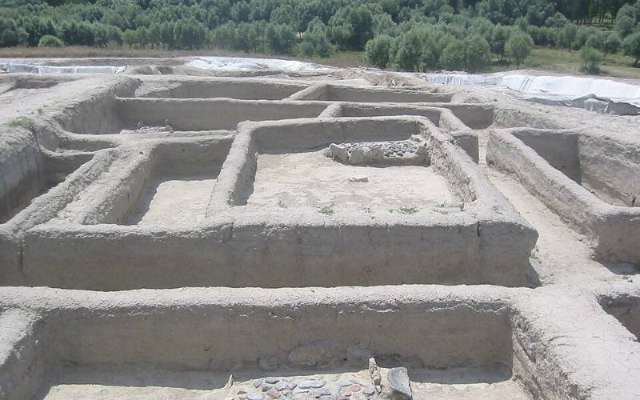
アシュクル・ホユックアクサライ · 新石器時代ベルディビ洞窟アンタルヤ · 旧石器時代 / Mezolitik ボンジュクル・ホユックコンヤ · 新石器時代
ボンジュクル・ホユックコンヤ · 新石器時代 ハジュラル・ホユックブルドゥル · 新石器時代 / 銅石器時代
ハジュラル・ホユックブルドゥル · 新石器時代 / 銅石器時代 カラハンテペ遺跡シャンルウルファ · 新石器時代
カラハンテペ遺跡シャンルウルファ · 新石器時代 カライン洞窟アンタルヤ · 旧石器時代
カライン洞窟アンタルヤ · 旧石器時代 テッケキョイ洞窟サムスン · 旧石器時代
テッケキョイ洞窟サムスン · 旧石器時代 イェシロヴァ遺丘イズミル · 新石器時代
イェシロヴァ遺丘イズミル · 新石器時代 ユムクテペ遺丘メルスィン · 新石器時代 – 中世
ユムクテペ遺丘メルスィン · 新石器時代 – 中世 チャユヌ遺丘ディヤルバクル · 新石器時代
チャユヌ遺丘ディヤルバクル · 新石器時代 オキュズイニ洞窟アンタルヤ · 旧石器時代
オキュズイニ洞窟アンタルヤ · 旧石器時代 クルクラーレリ博物館クルクラーレリ · 先史時代 / トラキア
クルクラーレリ博物館クルクラーレリ · 先史時代 / トラキア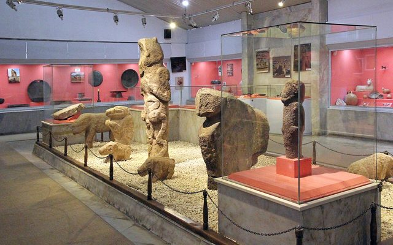
シャンルウルファ考古学博物館シャンルウルファ · 新石器時代 – オスマン青銅器時代とヒッタイト
紀元前 3000 – 1200 · 38 か所
アルスランテペ遺跡マラティヤ · 銅石器時代 / 青銅器時代 / 後期ヒッタイト ハットゥシャチョルム · ヒッタイト
ハットゥシャチョルム · ヒッタイト トロイチャナッカレ · 青銅器時代 / ローマ
トロイチャナッカレ · 青銅器時代 / ローマ アジェムホユックアクサライ · 青銅器時代 / Asur Ticaret
アジェムホユックアクサライ · 青銅器時代 / Asur Ticaret アフヨンカラヒサール城アフヨンカラヒサール · ヒッタイト – オスマン
アフヨンカラヒサール城アフヨンカラヒサール · ヒッタイト – オスマン アラジャホユック博物館と遺跡チョルム · 青銅器時代 / ヒッタイト
アラジャホユック博物館と遺跡チョルム · 青銅器時代 / ヒッタイト アリシャル遺丘ヨズガト · 青銅器時代 / ヒッタイト
アリシャル遺丘ヨズガト · 青銅器時代 / ヒッタイト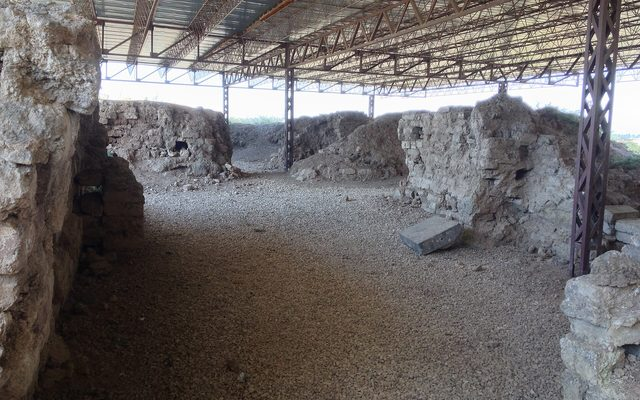
アッチャナ・ホユック（アララハ）ハタイ · 青銅器時代 ベイジェスルタン遺丘デニズリ · 青銅器時代
ベイジェスルタン遺丘デニズリ · 青銅器時代 ティグリス・トンネル（ビルクレイン洞窟）ディヤルバクル · Asur / ウラルトゥ
ティグリス・トンネル（ビルクレイン洞窟）ディヤルバクル · Asur / ウラルトゥ エフラトゥンプナル・ヒッタイトの泉の記念碑コンヤ · ヒッタイト
エフラトゥンプナル・ヒッタイトの泉の記念碑コンヤ · ヒッタイト エンコミ（アラシヤ）遺跡ガズィマウサ（ファマグスタ） · 青銅器時代
エンコミ（アラシヤ）遺跡ガズィマウサ（ファマグスタ） · 青銅器時代 エーイル城と預言者の墓廟ディヤルバクル · Asur – オスマン
エーイル城と預言者の墓廟ディヤルバクル · Asur – オスマン ファスッラル記念碑コンヤ · ヒッタイト
ファスッラル記念碑コンヤ · ヒッタイト フェティエ・トロス遺跡ムーラ · 青銅器時代 – オスマン
フェティエ・トロス遺跡ムーラ · 青銅器時代 – オスマン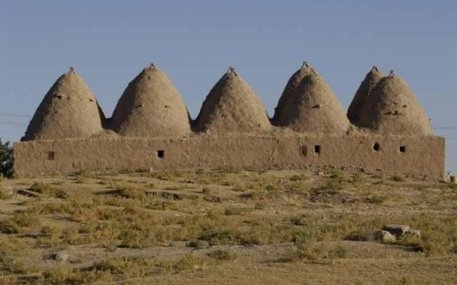
ハッラン遺跡シャンルウルファ · 青銅器時代 – 中世 イアソス遺跡ムーラ · 青銅器時代 – ビザンツ
イアソス遺跡ムーラ · 青銅器時代 – ビザンツ カマン・カレホユック考古学博物館クルシェヒル · 青銅器時代 / 鉄器時代
カマン・カレホユック考古学博物館クルシェヒル · 青銅器時代 / 鉄器時代 カラベルの岩壁レリーフイズミル · ヒッタイト (Arzawa)
カラベルの岩壁レリーフイズミル · ヒッタイト (Arzawa) カラテペ・アスランタシュ博物館と遺跡オスマニエ · 後期ヒッタイト (紀元前8世紀)
カラテペ・アスランタシュ博物館と遺跡オスマニエ · 後期ヒッタイト (紀元前8世紀) カルケミシュ古代都市ガズィアンテプ · 後期ヒッタイト / 鉄器時代
カルケミシュ古代都市ガズィアンテプ · 後期ヒッタイト / 鉄器時代 キュルテペ遺跡カイセリ · 青銅器時代
キュルテペ遺跡カイセリ · 青銅器時代 マシャト遺丘トカト · ヒッタイト
マシャト遺丘トカト · ヒッタイト オルズ遺丘アマスヤ · 青銅器時代 / Pers
オルズ遺丘アマスヤ · 青銅器時代 / Pers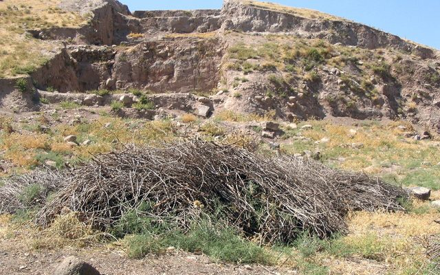
オユルム遺丘キリス · 青銅器時代 サラミス遺跡ガズィマウサ（ファマグスタ） · 青銅器時代 / ローマ / ビザンツ
サラミス遺跡ガズィマウサ（ファマグスタ） · 青銅器時代 / ローマ / ビザンツ サリッサ（クシャクル）ヒッタイト都市スィヴァス · ヒッタイト
サリッサ（クシャクル）ヒッタイト都市スィヴァス · ヒッタイト スィルケリ遺丘とムワタリのレリーフアダナ · ヒッタイト
スィルケリ遺丘とムワタリのレリーフアダナ · ヒッタイト タルスス・ギョズリュクレメルスィン · 青銅器時代 – ローマ
タルスス・ギョズリュクレメルスィン · 青銅器時代 – ローマ ティルメン・ホユックガズィアンテプ · 青銅器時代
ティルメン・ホユックガズィアンテプ · 青銅器時代 イェセメク遺跡ガズィアンテプ · 後期ヒッタイトユムクテペ遺丘メルスィン · 新石器時代 – 中世
イェセメク遺跡ガズィアンテプ · 後期ヒッタイトユムクテペ遺丘メルスィン · 新石器時代 – 中世 ズィンジルリ・ホユック（サマル）ガズィアンテプ · 後期ヒッタイト / Arami
ズィンジルリ・ホユック（サマル）ガズィアンテプ · 後期ヒッタイト / Arami シャピヌワチョルム · ヒッタイト
シャピヌワチョルム · ヒッタイト シャル（コマナ）古代都市アダナ · ヒッタイト / ローマ
シャル（コマナ）古代都市アダナ · ヒッタイト / ローマ ボドルム水中考古学博物館ムーラ · 青銅器時代 – オスマン
ボドルム水中考古学博物館ムーラ · 青銅器時代 – オスマン ボアズキョイ博物館チョルム · ヒッタイトシャンルウルファ考古学博物館シャンルウルファ · 新石器時代 – オスマン
ボアズキョイ博物館チョルム · ヒッタイトシャンルウルファ考古学博物館シャンルウルファ · 新石器時代 – オスマン鉄器時代の諸王国
紀元前 1200 – 550 · 79 か所
アルスランテペ遺跡マラティヤ · 銅石器時代 / 青銅器時代 / 後期ヒッタイト クサントス遺跡アンタルヤ · リュキア
クサントス遺跡アンタルヤ · リュキア ゴルディオン博物館アンカラ · フリギアアフヨンカラヒサール城アフヨンカラヒサール · ヒッタイト – オスマンアカリッソス古代都市アンタルヤ · リュキア / ローマ
ゴルディオン博物館アンカラ · フリギアアフヨンカラヒサール城アフヨンカラヒサール · ヒッタイト – オスマンアカリッソス古代都市アンタルヤ · リュキア / ローマ アルトゥンテペ・ウラルトゥ城塞エルズィンジャン · ウラルトゥ
アルトゥンテペ・ウラルトゥ城塞エルズィンジャン · ウラルトゥ アミンタスの岩窟墓ムーラ · リュキア (紀元前4世紀)
アミンタスの岩窟墓ムーラ · リュキア (紀元前4世紀) アペルライ古代都市アンタルヤ · リュキア / ローマ
アペルライ古代都市アンタルヤ · リュキア / ローマ アポロニア（リュキア）古代都市アンタルヤ · リュキアアルネアイ古代都市アンタルヤ · リュキア / ローマ
アポロニア（リュキア）古代都市アンタルヤ · リュキアアルネアイ古代都市アンタルヤ · リュキア / ローマ アルサダ古代都市ムーラ · リュキア
アルサダ古代都市ムーラ · リュキア アリカンダ遺跡アンタルヤ · リュキア / ローマ
アリカンダ遺跡アンタルヤ · リュキア / ローマ アヤニス城ヴァン · ウラルトゥ
アヤニス城ヴァン · ウラルトゥ ビン・テペ・リディアの墳丘群マニサ · リディア
ビン・テペ・リディアの墳丘群マニサ · リディア ダスキュレイオン古代都市バルケシル · Pers / ヘレニズムティグリス・トンネル（ビルクレイン洞窟）ディヤルバクル · Asur / ウラルトゥエーイル城と預言者の墓廟ディヤルバクル · Asur – オスマン
ダスキュレイオン古代都市バルケシル · Pers / ヘレニズムティグリス・トンネル（ビルクレイン洞窟）ディヤルバクル · Asur / ウラルトゥエーイル城と預言者の墓廟ディヤルバクル · Asur – オスマン フェティエ・レトーン遺跡ムーラ · リュキア / ローマ
フェティエ・レトーン遺跡ムーラ · リュキア / ローマ フェティエ・ピナラ遺跡ムーラ · リュキア / ローマフェティエ・トロス遺跡ムーラ · 青銅器時代 – オスマンガガイ古代都市アンタルヤ · リュキア / ビザンツ
フェティエ・ピナラ遺跡ムーラ · リュキア / ローマフェティエ・トロス遺跡ムーラ · 青銅器時代 – オスマンガガイ古代都市アンタルヤ · リュキア / ビザンツ ゲルガ古代都市アイドゥン · カリア
ゲルガ古代都市アイドゥン · カリア ハルプト城エラズー · ウラルトゥ / 中世ハッラン遺跡シャンルウルファ · 青銅器時代 – 中世ヒュッラリマ古代都市ムーラ · カリア / ヘレニズムイアソス遺跡ムーラ · 青銅器時代 – ビザンツ
ハルプト城エラズー · ウラルトゥ / 中世ハッラン遺跡シャンルウルファ · 青銅器時代 – 中世ヒュッラリマ古代都市ムーラ · カリア / ヘレニズムイアソス遺跡ムーラ · 青銅器時代 – ビザンツ イデベッソス古代都市アンタルヤ · リュキア / ローマ
イデベッソス古代都市アンタルヤ · リュキア / ローマ カディアンダ古代都市ムーラ · リュキア / ローマカマン・カレホユック考古学博物館クルシェヒル · 青銅器時代 / 鉄器時代カンデュバ古代都市アンタルヤ · リュキアカラテペ・アスランタシュ博物館と遺跡オスマニエ · 後期ヒッタイト (紀元前8世紀)カルケミシュ古代都市ガズィアンテプ · 後期ヒッタイト / 鉄器時代
カディアンダ古代都市ムーラ · リュキア / ローマカマン・カレホユック考古学博物館クルシェヒル · 青銅器時代 / 鉄器時代カンデュバ古代都市アンタルヤ · リュキアカラテペ・アスランタシュ博物館と遺跡オスマニエ · 後期ヒッタイト (紀元前8世紀)カルケミシュ古代都市ガズィアンテプ · 後期ヒッタイト / 鉄器時代 カウノス遺跡ムーラ · カリア / ヘレニズム / ローマ
カウノス遺跡ムーラ · カリア / ヘレニズム / ローマ ケコヴァの沈んだ都市アンタルヤ · リュキア / ローマ
ケコヴァの沈んだ都市アンタルヤ · リュキア / ローマ ケラモス古代都市ムーラ · カリア / ローマ
ケラモス古代都市ムーラ · カリア / ローマ ケルケネス古代都市ヨズガト · フリギア / 鉄器時代コリュダッラ古代都市アンタルヤ · リュキア / ローマ王家の墓博物館と遺跡ガズィマウサ（ファマグスタ） · 鉄器時代 (紀元前8–7世紀)
ケルケネス古代都市ヨズガト · フリギア / 鉄器時代コリュダッラ古代都市アンタルヤ · リュキア / ローマ王家の墓博物館と遺跡ガズィマウサ（ファマグスタ） · 鉄器時代 (紀元前8–7世紀) キュアネアイ古代都市アンタルヤ · リュキア / ローマ
キュアネアイ古代都市アンタルヤ · リュキア / ローマ ラブラウンダ遺跡ムーラ · カリア / ヘレニズム
ラブラウンダ遺跡ムーラ · カリア / ヘレニズム リュキア文明博物館とアンドリアケ遺跡アンタルヤ · リュキア / ローマ
リュキア文明博物館とアンドリアケ遺跡アンタルヤ · リュキア / ローマ リミラ遺跡アンタルヤ · リュキア / ローマ
リミラ遺跡アンタルヤ · リュキア / ローマ メヘル門（ムヘルの扉）ヴァン · ウラルトゥ
メヘル門（ムヘルの扉）ヴァン · ウラルトゥ ミダス市遺跡（ヤズルカヤ）エスキシェヒル · フリギア
ミダス市遺跡（ヤズルカヤ）エスキシェヒル · フリギア ミラス・ウズンユヴァ（ヘカトムノスの記念墓）ムーラ · カリア
ミラス・ウズンユヴァ（ヘカトムノスの記念墓）ムーラ · カリア ミラス・ウズンユヴァ記念墓と博物館複合施設ムーラ · カリア (紀元前4世紀)
ミラス・ウズンユヴァ記念墓と博物館複合施設ムーラ · カリア (紀元前4世紀) ミュラ遺跡アンタルヤ · リュキア / ローマ
ミュラ遺跡アンタルヤ · リュキア / ローマ オイノアンダ古代都市ムーラ · リュキア / ローマオルズ遺丘アマスヤ · 青銅器時代 / Pers
オイノアンダ古代都市ムーラ · リュキア / ローマオルズ遺丘アマスヤ · 青銅器時代 / Pers オリンポス遺跡アンタルヤ · リュキア / ローマ
オリンポス遺跡アンタルヤ · リュキア / ローマ パタラ遺跡アンタルヤ · リュキア / ローマ
パタラ遺跡アンタルヤ · リュキア / ローマ ペッシヌス遺跡エスキシェヒル · フリギア / ヘレニズム / ローマ
ペッシヌス遺跡エスキシェヒル · フリギア / ヘレニズム / ローマ ファセリス遺跡アンタルヤ · リュキア / ローマ
ファセリス遺跡アンタルヤ · リュキア / ローマ フェロス古代都市アンタルヤ · リュキア
フェロス古代都市アンタルヤ · リュキア ピュドナイ城ムーラ · リュキア / ヘレニズム
ピュドナイ城ムーラ · リュキア / ヘレニズム ロディアポリス古代都市アンタルヤ · リュキア / ローマ
ロディアポリス古代都市アンタルヤ · リュキア / ローマ サルディス遺跡マニサ · リディア / ローマ
サルディス遺跡マニサ · リディア / ローマ セベダ古代都市アンタルヤ · リュキア
セベダ古代都市アンタルヤ · リュキア シデュマ古代都市ムーラ · リュキア / ローマ
シデュマ古代都市ムーラ · リュキア / ローマ シメナ遺跡アンタルヤ · リュキア / ビザンツ
シメナ遺跡アンタルヤ · リュキア / ビザンツ スラ古代都市アンタルヤ · リュキアタルスス・ギョズリュクレメルスィン · 青銅器時代 – ローマ
スラ古代都市アンタルヤ · リュキアタルスス・ギョズリュクレメルスィン · 青銅器時代 – ローマ テイミウッサ古代都市アンタルヤ · リュキア
テイミウッサ古代都市アンタルヤ · リュキア トリュサ古代都市アンタルヤ · リュキア
トリュサ古代都市アンタルヤ · リュキア ティベリッソス古代都市アンタルヤ · リュキア
ティベリッソス古代都市アンタルヤ · リュキア ヴァン城ヴァン · ウラルトゥ – オスマンイェセメク遺跡ガズィアンテプ · 後期ヒッタイトユムクテペ遺丘メルスィン · 新石器時代 – 中世
ヴァン城ヴァン · ウラルトゥ – オスマンイェセメク遺跡ガズィアンテプ · 後期ヒッタイトユムクテペ遺丘メルスィン · 新石器時代 – 中世 ユランカレアダナ · Kilikya Ermeni Krallığıズィンジルリ・ホユック（サマル）ガズィアンテプ · 後期ヒッタイト / Arami
ユランカレアダナ · Kilikya Ermeni Krallığıズィンジルリ・ホユック（サマル）ガズィアンテプ · 後期ヒッタイト / Arami チャヴシュテペ城ヴァン · ウラルトゥ (紀元前8–7世紀)ボドルム水中考古学博物館ムーラ · 青銅器時代 – オスマン
チャヴシュテペ城ヴァン · ウラルトゥ (紀元前8–7世紀)ボドルム水中考古学博物館ムーラ · 青銅器時代 – オスマン エルズィンジャン博物館エルズィンジャン · ウラルトゥ / 複数の時代
エルズィンジャン博物館エルズィンジャン · ウラルトゥ / 複数の時代 フェティエ博物館ムーラ · リュキア / ローマクルクラーレリ博物館クルクラーレリ · 先史時代 / トラキア
フェティエ博物館ムーラ · リュキア / ローマクルクラーレリ博物館クルクラーレリ · 先史時代 / トラキア ムーラ・ボドルム・マウソレウム記念博物館ムーラ · カリア (紀元前4世紀)
ムーラ・ボドルム・マウソレウム記念博物館ムーラ · カリア (紀元前4世紀) ウシャク博物館ウシャク · リディア / 複数の時代
ウシャク博物館ウシャク · リディア / 複数の時代 ヴァン博物館ヴァン · ウラルトゥ / 複数の時代シャンルウルファ考古学博物館シャンルウルファ · 新石器時代 – オスマン
ヴァン博物館ヴァン · ウラルトゥ / 複数の時代シャンルウルファ考古学博物館シャンルウルファ · 新石器時代 – オスマン古典期・ヘレニズム時代
紀元前 550 – 30 · 104 か所
 アフロディシアス博物館と遺跡アイドゥン · ヘレニズム / ローマ
アフロディシアス博物館と遺跡アイドゥン · ヘレニズム / ローマ ベルガマのアクロポリスイズミル · ヘレニズム / ローマ
ベルガマのアクロポリスイズミル · ヘレニズム / ローマ ベルガマ・アスクレピオン遺跡イズミル · ヘレニズム / ローマ
ベルガマ・アスクレピオン遺跡イズミル · ヘレニズム / ローマ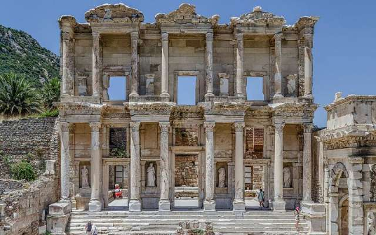
エフェソスイズミル · ヘレニズム / ローマ ヒエラポリス（パムッカレ）遺跡デニズリ · ヘレニズム / ローマ
ヒエラポリス（パムッカレ）遺跡デニズリ · ヘレニズム / ローマ ネムルト山アドゥヤマン · ヘレニズム (コンマゲネ)アフヨンカラヒサール城アフヨンカラヒサール · ヒッタイト – オスマン
ネムルト山アドゥヤマン · ヘレニズム (コンマゲネ)アフヨンカラヒサール城アフヨンカラヒサール · ヒッタイト – オスマン アゴラ遺跡（イズミル）イズミル · ヘレニズム / ローマ
アゴラ遺跡（イズミル）イズミル · ヘレニズム / ローマ アイガイ遺跡マニサ · ヘレニズム / ローマ
アイガイ遺跡マニサ · ヘレニズム / ローマ アラバンダ遺跡アイドゥン · ヘレニズム / ローマ
アラバンダ遺跡アイドゥン · ヘレニズム / ローマ アラシェヒル遺跡マニサ · ヘレニズム / ビザンツ
アラシェヒル遺跡マニサ · ヘレニズム / ビザンツ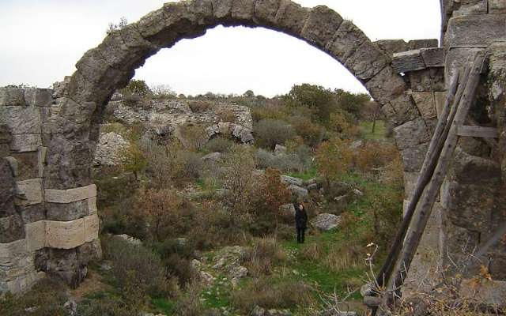
アレクサンドリア・トロアス遺跡チャナッカレ · ヘレニズム / ローマ アリンダ遺跡アイドゥン · ヘレニズム / ローマ
アリンダ遺跡アイドゥン · ヘレニズム / ローマ アミソスの丘（アミソス古代都市）サムスン · ヘレニズム
アミソスの丘（アミソス古代都市）サムスン · ヘレニズム アモス古代都市ムーラ · ヘレニズムアミュゾン古代都市アイドゥン · ヘレニズム
アモス古代都市ムーラ · ヘレニズムアミュゾン古代都市アイドゥン · ヘレニズム アンタルヤ・シエドラ古代都市アンタルヤ · ヘレニズム / ローマ
アンタルヤ・シエドラ古代都市アンタルヤ · ヘレニズム / ローマ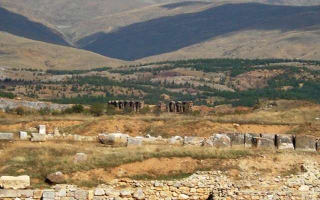
ピシディアのアンティオキア遺跡ウスパルタ · ヘレニズム / ローマ アンティフェロス古代劇場（カシュ）アンタルヤ · ヘレニズム / ローマ
アンティフェロス古代劇場（カシュ）アンタルヤ · ヘレニズム / ローマ アポロン・スミンテウス遺跡チャナッカレ · ヘレニズム
アポロン・スミンテウス遺跡チャナッカレ · ヘレニズム アルサメイア遺跡アドゥヤマン · ヘレニズム (コンマゲネ)
アルサメイア遺跡アドゥヤマン · ヘレニズム (コンマゲネ) アッソス遺跡チャナッカレ · アルカイック期 / ヘレニズム
アッソス遺跡チャナッカレ · アルカイック期 / ヘレニズム バルギュリア古代都市ムーラ · ヘレニズム / ローマ
バルギュリア古代都市ムーラ · ヘレニズム / ローマ ブラウンドス遺跡ウシャク · ヘレニズム / ローマ
ブラウンドス遺跡ウシャク · ヘレニズム / ローマ ボドルム古代劇場ムーラ · ヘレニズム / ローマダスキュレイオン古代都市バルケシル · Pers / ヘレニズム
ボドルム古代劇場ムーラ · ヘレニズム / ローマダスキュレイオン古代都市バルケシル · Pers / ヘレニズム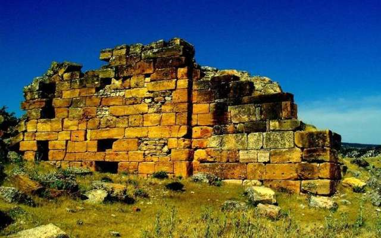
デニズリ・トリポリス遺跡デニズリ · ヘレニズム / ローマ ディディム・アポロン神殿アイドゥン · ヘレニズム / ローマデュリュク（ドリケ）古代都市ガズィアンテプ · ローマ / コンマゲネ
ディディム・アポロン神殿アイドゥン · ヘレニズム / ローマデュリュク（ドリケ）古代都市ガズィアンテプ · ローマ / コンマゲネ エリュトライ古代都市イズミル · ヘレニズム / ローマ
エリュトライ古代都市イズミル · ヘレニズム / ローマ 古スミルナ（バイラクル遺丘）イズミル · アルカイック期エーイル城と預言者の墓廟ディヤルバクル · Asur – オスマンフェティエ・トロス遺跡ムーラ · 青銅器時代 – オスマン
古スミルナ（バイラクル遺丘）イズミル · アルカイック期エーイル城と預言者の墓廟ディヤルバクル · Asur – オスマンフェティエ・トロス遺跡ムーラ · 青銅器時代 – オスマン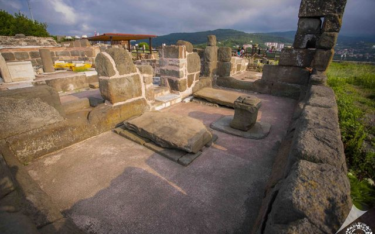
フィリョス（ティオス）遺跡ゾングルダク · ヘレニズム – ビザンツ ギョルヤズ（リンダコス河畔のアポロニア）ブルサ · ヘレニズム / ローマハッラン遺跡シャンルウルファ · 青銅器時代 – 中世
ギョルヤズ（リンダコス河畔のアポロニア）ブルサ · ヘレニズム / ローマハッラン遺跡シャンルウルファ · 青銅器時代 – 中世 ヘラクレイア（ラトモス）古代都市ムーラ · ヘレニズム / ビザンツ
ヘラクレイア（ラトモス）古代都市ムーラ · ヘレニズム / ビザンツ ヘラクレイア・サルバケ古代都市デニズリ · ヘレニズム / ローマヒュッラリマ古代都市ムーラ · カリア / ヘレニズムイアソス遺跡ムーラ · 青銅器時代 – ビザンツ
ヘラクレイア・サルバケ古代都市デニズリ · ヘレニズム / ローマヒュッラリマ古代都市ムーラ · カリア / ヘレニズムイアソス遺跡ムーラ · 青銅器時代 – ビザンツ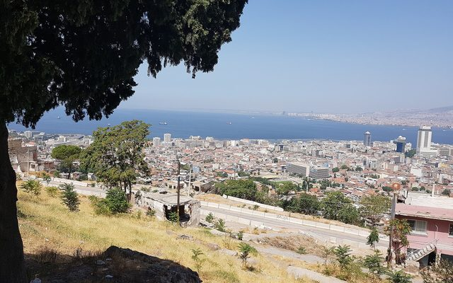
カディフェカレイズミル · ヘレニズム / オスマン キャフタ・イェニ城遺跡アドゥヤマン · コンマゲネ / 中世
キャフタ・イェニ城遺跡アドゥヤマン · コンマゲネ / 中世 カンルディヴァーネ遺跡メルスィン · ヘレニズム / ローマ / ビザンツ
カンルディヴァーネ遺跡メルスィン · ヘレニズム / ローマ / ビザンツ カンルディヴァーネ（カニュテリス）メルスィン · ヘレニズム / ビザンツ
カンルディヴァーネ（カニュテリス）メルスィン · ヘレニズム / ビザンツ カプルカヤ岩窟墓チョルム · Paflagonya / ヘレニズム
カプルカヤ岩窟墓チョルム · Paflagonya / ヘレニズム カラクシュ墳丘アドゥヤマン · コンマゲネ
カラクシュ墳丘アドゥヤマン · コンマゲネ カスタバラ遺跡オスマニエ · ヘレニズム / ローマ / 中世カウノス遺跡ムーラ · カリア / ヘレニズム / ローマ
カスタバラ遺跡オスマニエ · ヘレニズム / ローマ / 中世カウノス遺跡ムーラ · カリア / ヘレニズム / ローマ クラロス遺跡イズミル · アルカイック期 / ローマ
クラロス遺跡イズミル · アルカイック期 / ローマ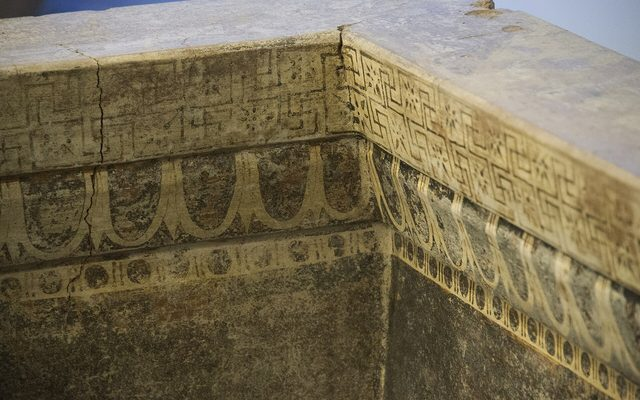
クラゾメナイ遺跡イズミル · アルカイック期 コロフォン古代都市イズミル · アルカイック期 / ヘレニズムコマナ・ポンティカ古代都市トカト · ヘレニズム / ローマ
コロフォン古代都市イズミル · アルカイック期 / ヘレニズムコマナ・ポンティカ古代都市トカト · ヘレニズム / ローマ キュメ古代都市イズミル · アルカイック期 / ローマ
キュメ古代都市イズミル · アルカイック期 / ローマ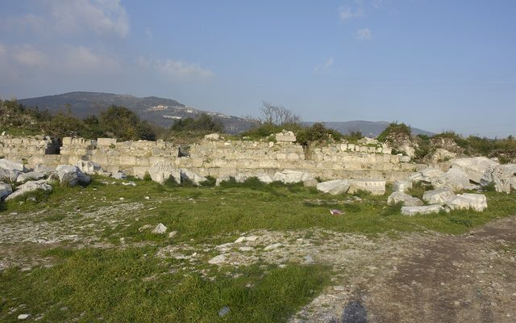
キュジコス古代都市バルケシル · ヘレニズム / ローマラブラウンダ遺跡ムーラ · カリア / ヘレニズム ラギナ遺跡ムーラ · ヘレニズム / ローマ
ラギナ遺跡ムーラ · ヘレニズム / ローマ ラオディケア遺跡デニズリ · ヘレニズム / ローマ
ラオディケア遺跡デニズリ · ヘレニズム / ローマ ロリュマ古代都市ムーラ · ヘレニズム
ロリュマ古代都市ムーラ · ヘレニズム マガルソス古代都市アダナ · ヘレニズム / ローマ
マガルソス古代都市アダナ · ヘレニズム / ローマ マグネシア遺跡アイドゥン · ヘレニズム / ローマ
マグネシア遺跡アイドゥン · ヘレニズム / ローマ マニサ・アクヒサル博物館とアクヒサル・テペ墓地マニサ · ヘレニズム / ローマ
マニサ・アクヒサル博物館とアクヒサル・テペ墓地マニサ · ヘレニズム / ローマ メトロポリス遺跡イズミル · ヘレニズム / ローマ
メトロポリス遺跡イズミル · ヘレニズム / ローマ ミラス・エウロモス遺跡ムーラ · ヘレニズム / ローマ
ミラス・エウロモス遺跡ムーラ · ヘレニズム / ローマ ミレトス遺跡アイドゥン · アルカイック期 / ローマ
ミレトス遺跡アイドゥン · アルカイック期 / ローマ ムーラ・クニドス遺跡ムーラ · 古典期 / ヘレニズム
ムーラ・クニドス遺跡ムーラ · 古典期 / ヘレニズム ミュンドス古代都市ムーラ · ヘレニズムネアンドレイア古代都市チャナッカレ · アルカイック期 / ヘレニズム
ミュンドス古代都市ムーラ · ヘレニズムネアンドレイア古代都市チャナッカレ · アルカイック期 / ヘレニズム ノティオン古代都市イズミル · ヘレニズム / ローマ
ノティオン古代都市イズミル · ヘレニズム / ローマ ニサ遺跡（スルタンヒサル）アイドゥン · ヘレニズム / ローマ
ニサ遺跡（スルタンヒサル）アイドゥン · ヘレニズム / ローマ オルバ古代都市メルスィン · ヘレニズム / ローマ
オルバ古代都市メルスィン · ヘレニズム / ローマ パリオン古代都市チャナッカレ · ヘレニズム / ローマペドネリッソス古代都市アンタルヤ · ヘレニズム / ローマ
パリオン古代都市チャナッカレ · ヘレニズム / ローマペドネリッソス古代都市アンタルヤ · ヘレニズム / ローマ ペルゲ遺跡アンタルヤ · ヘレニズム / ローマペルペレネ古代都市バルケシル · ヘレニズム / ローマ
ペルゲ遺跡アンタルヤ · ヘレニズム / ローマペルペレネ古代都市バルケシル · ヘレニズム / ローマ ペッレ遺跡アドゥヤマン · コンマゲネ / ローマペッシヌス遺跡エスキシェヒル · フリギア / ヘレニズム / ローマ
ペッレ遺跡アドゥヤマン · コンマゲネ / ローマペッシヌス遺跡エスキシェヒル · フリギア / ヘレニズム / ローマ フォカイア（フォチャ）古代都市イズミル · アルカイック期 / ローマ
フォカイア（フォチャ）古代都市イズミル · アルカイック期 / ローマ ピシディアのアンティオキア古代都市ウスパルタ · ヘレニズム / ローマ
ピシディアのアンティオキア古代都市ウスパルタ · ヘレニズム / ローマ プリエネ遺跡アイドゥン · ヘレニズムピュドナイ城ムーラ · リュキア / ヘレニズム
プリエネ遺跡アイドゥン · ヘレニズムピュドナイ城ムーラ · リュキア / ヘレニズム サガラッソス遺跡ブルドゥル · ヘレニズム / ローマ
サガラッソス遺跡ブルドゥル · ヘレニズム / ローマ セディル島遺跡ムーラ · ヘレニズム / ローマ
セディル島遺跡ムーラ · ヘレニズム / ローマ セレウケイア（パンフィリア）古代都市アンタルヤ · ヘレニズム / ローマ
セレウケイア（パンフィリア）古代都市アンタルヤ · ヘレニズム / ローマ セルゲ古代都市アンタルヤ · ヘレニズム / ローマ
セルゲ古代都市アンタルヤ · ヘレニズム / ローマ シデ遺跡アンタルヤ · ヘレニズム / ローマ
シデ遺跡アンタルヤ · ヘレニズム / ローマ シッリオン古代都市アンタルヤ · ヘレニズム / ローマ
シッリオン古代都市アンタルヤ · ヘレニズム / ローマ ソフラズ記念墓アドゥヤマン · ヘレニズム / ローマ
ソフラズ記念墓アドゥヤマン · ヘレニズム / ローマ ソリ・ポンペイオポリス古代都市メルスィン · ヘレニズム / ローマ
ソリ・ポンペイオポリス古代都市メルスィン · ヘレニズム / ローマ ソリ遺跡レフケ · アルカイック期 / ローマ
ソリ遺跡レフケ · アルカイック期 / ローマ ストラトニケイア遺跡ムーラ · ヘレニズム – オスマンタルスス・ギョズリュクレメルスィン · 青銅器時代 – ローマ
ストラトニケイア遺跡ムーラ · ヘレニズム – オスマンタルスス・ギョズリュクレメルスィン · 青銅器時代 – ローマ テオス遺跡イズミル · アルカイック期 / ヘレニズム
テオス遺跡イズミル · アルカイック期 / ヘレニズム テルメッソス遺跡アンタルヤ · ヘレニズム / ローマ
テルメッソス遺跡アンタルヤ · ヘレニズム / ローマ トラレイス古代都市アイドゥン · ヘレニズム / ローマ
トラレイス古代都市アイドゥン · ヘレニズム / ローマ ウズンジャブルチ遺跡メルスィン · ヘレニズム / ローマヴァン城ヴァン · ウラルトゥ – オスマン
ウズンジャブルチ遺跡メルスィン · ヘレニズム / ローマヴァン城ヴァン · ウラルトゥ – オスマン ヴニ宮殿レフケ · 古典期 (紀元前5世紀)ユムクテペ遺丘メルスィン · 新石器時代 – 中世
ヴニ宮殿レフケ · 古典期 (紀元前5世紀)ユムクテペ遺丘メルスィン · 新石器時代 – 中世 ゼウグマ遺跡ガズィアンテプ · ヘレニズム / ローマ
ゼウグマ遺跡ガズィアンテプ · ヘレニズム / ローマ チャトゥオレン古代集落メルスィン · ヘレニズム / ローマ
チャトゥオレン古代集落メルスィン · ヘレニズム / ローマ チェヴリク遺跡ハタイ · ヘレニズム / ローマ
チェヴリク遺跡ハタイ · ヘレニズム / ローマ シャンルウルファ城シャンルウルファ · ヘレニズム – 中世ボドルム水中考古学博物館ムーラ · 青銅器時代 – オスマンシャンルウルファ考古学博物館シャンルウルファ · 新石器時代 – オスマン
シャンルウルファ城シャンルウルファ · ヘレニズム – 中世ボドルム水中考古学博物館ムーラ · 青銅器時代 – オスマンシャンルウルファ考古学博物館シャンルウルファ · 新石器時代 – オスマンローマ時代
紀元前 30 – 紀元 330 · 187 か所
アフロディシアス博物館と遺跡アイドゥン · ヘレニズム / ローマベルガマのアクロポリスイズミル · ヘレニズム / ローマベルガマ・アスクレピオン遺跡イズミル · ヘレニズム / ローマ ベルガマ・赤いバシリカイズミル · ローマ / ビザンツエフェソスイズミル · ヘレニズム / ローマヒエラポリス（パムッカレ）遺跡デニズリ · ヘレニズム / ローマトロイチャナッカレ · 青銅器時代 / ローマ
ベルガマ・赤いバシリカイズミル · ローマ / ビザンツエフェソスイズミル · ヘレニズム / ローマヒエラポリス（パムッカレ）遺跡デニズリ · ヘレニズム / ローマトロイチャナッカレ · 青銅器時代 / ローマ アダダ古代都市ウスパルタ · ローマ
アダダ古代都市ウスパルタ · ローマ アダムカヤラルメルスィン · ローマアフヨンカラヒサール城アフヨンカラヒサール · ヒッタイト – オスマンアゴラ遺跡（イズミル）イズミル · ヘレニズム / ローマアイガイ遺跡マニサ · ヘレニズム / ローマ
アダムカヤラルメルスィン · ローマアフヨンカラヒサール城アフヨンカラヒサール · ヒッタイト – オスマンアゴラ遺跡（イズミル）イズミル · ヘレニズム / ローマアイガイ遺跡マニサ · ヘレニズム / ローマ アイザノイ遺跡キュタヒヤ · ローマアカリッソス古代都市アンタルヤ · リュキア / ローマ
アイザノイ遺跡キュタヒヤ · ローマアカリッソス古代都市アンタルヤ · リュキア / ローマ アッカレ遺跡メルスィン · ローマ / ビザンツアラバンダ遺跡アイドゥン · ヘレニズム / ローマアレクサンドリア・トロアス遺跡チャナッカレ · ヘレニズム / ローマアリンダ遺跡アイドゥン · ヘレニズム / ローマ
アッカレ遺跡メルスィン · ローマ / ビザンツアラバンダ遺跡アイドゥン · ヘレニズム / ローマアレクサンドリア・トロアス遺跡チャナッカレ · ヘレニズム / ローマアリンダ遺跡アイドゥン · ヘレニズム / ローマ アモリオン古代都市アフヨンカラヒサール · ローマ / ビザンツ
アモリオン古代都市アフヨンカラヒサール · ローマ / ビザンツ アナザルボス遺跡（アナヴァルザ）アダナ · ローマ / ビザンツ
アナザルボス遺跡（アナヴァルザ）アダナ · ローマ / ビザンツ アネムリウム遺跡メルスィン · ローマ / ビザンツ
アネムリウム遺跡メルスィン · ローマ / ビザンツ アンカラ城アンカラ · ローマ – オスマン
アンカラ城アンカラ · ローマ – オスマン アンカラ・ローマ劇場アンカラ · ローマアンタルヤ・シエドラ古代都市アンタルヤ · ヘレニズム / ローマ
アンカラ・ローマ劇場アンカラ · ローマアンタルヤ・シエドラ古代都市アンタルヤ · ヘレニズム / ローマ アンタンドロス古代都市バルケシル · ローマピシディアのアンティオキア遺跡ウスパルタ · ヘレニズム / ローマ
アンタンドロス古代都市バルケシル · ローマピシディアのアンティオキア遺跡ウスパルタ · ヘレニズム / ローマ アンティオキア・アド・クラグム古代都市アンタルヤ · ローマアンティフェロス古代劇場（カシュ）アンタルヤ · ヘレニズム / ローマアペルライ古代都市アンタルヤ · リュキア / ローマ
アンティオキア・アド・クラグム古代都市アンタルヤ · ローマアンティフェロス古代劇場（カシュ）アンタルヤ · ヘレニズム / ローマアペルライ古代都市アンタルヤ · リュキア / ローマ アリアッソス古代都市アンタルヤ · ローマアルネアイ古代都市アンタルヤ · リュキア / ローマアリカンダ遺跡アンタルヤ · リュキア / ローマ
アリアッソス古代都市アンタルヤ · ローマアルネアイ古代都市アンタルヤ · リュキア / ローマアリカンダ遺跡アンタルヤ · リュキア / ローマ アスペンドスアンタルヤ · ローマ
アスペンドスアンタルヤ · ローマ アウグストゥス神殿アンカラ · ローマバルブラ古代都市ブルドゥル · ローマバルギュリア古代都市ムーラ · ヘレニズム / ローマブラウンドス遺跡ウシャク · ヘレニズム / ローマボドルム古代劇場ムーラ · ヘレニズム / ローマ
アウグストゥス神殿アンカラ · ローマバルブラ古代都市ブルドゥル · ローマバルギュリア古代都市ムーラ · ヘレニズム / ローマブラウンドス遺跡ウシャク · ヘレニズム / ローマボドルム古代劇場ムーラ · ヘレニズム / ローマ ボズドアン水道橋イスタンブール · ローマ
ボズドアン水道橋イスタンブール · ローマ ジェンデレ橋アドゥヤマン · ローマデニズリ・トリポリス遺跡デニズリ · ヘレニズム / ローマデルベ遺丘カラマン · ローマ / ビザンツディディム・アポロン神殿アイドゥン · ヘレニズム / ローマ
ジェンデレ橋アドゥヤマン · ローマデニズリ・トリポリス遺跡デニズリ · ヘレニズム / ローマデルベ遺丘カラマン · ローマ / ビザンツディディム・アポロン神殿アイドゥン · ヘレニズム / ローマ ディヤルバクル城壁ディヤルバクル · ローマ – オスマンデュリュク（ドリケ）古代都市ガズィアンテプ · ローマ / コンマゲネ
ディヤルバクル城壁ディヤルバクル · ローマ – オスマンデュリュク（ドリケ）古代都市ガズィアンテプ · ローマ / コンマゲネ エディルネ・マケドニア塔エディルネ · ローマ / ビザンツ / オスマン
エディルネ・マケドニア塔エディルネ · ローマ / ビザンツ / オスマン エフェソス遺跡・テラスハウスイズミル · ローマ / ビザンツ
エフェソス遺跡・テラスハウスイズミル · ローマ / ビザンツ エライウッサ・セバステ古代都市メルスィン · ローマエリュトライ古代都市イズミル · ヘレニズム / ローマエテンナ古代都市アンタルヤ · ローマ / ビザンツエーイル城と預言者の墓廟ディヤルバクル · Asur – オスマンフェティエ・レトーン遺跡ムーラ · リュキア / ローマフェティエ・ピナラ遺跡ムーラ · リュキア / ローマフェティエ・トロス遺跡ムーラ · 青銅器時代 – オスマンフィリョス（ティオス）遺跡ゾングルダク · ヘレニズム – ビザンツゲルマニキア・モザイク遺跡カフラマンマラシュ · ローマ
エライウッサ・セバステ古代都市メルスィン · ローマエリュトライ古代都市イズミル · ヘレニズム / ローマエテンナ古代都市アンタルヤ · ローマ / ビザンツエーイル城と預言者の墓廟ディヤルバクル · Asur – オスマンフェティエ・レトーン遺跡ムーラ · リュキア / ローマフェティエ・ピナラ遺跡ムーラ · リュキア / ローマフェティエ・トロス遺跡ムーラ · 青銅器時代 – オスマンフィリョス（ティオス）遺跡ゾングルダク · ヘレニズム – ビザンツゲルマニキア・モザイク遺跡カフラマンマラシュ · ローマ ギョクカレ遺跡メルスィン · ローマ / ビザンツギョルヤズ（リンダコス河畔のアポロニア）ブルサ · ヘレニズム / ローマ
ギョクカレ遺跡メルスィン · ローマ / ビザンツギョルヤズ（リンダコス河畔のアポロニア）ブルサ · ヘレニズム / ローマ ギュミュシュケセン記念墓ムーラ · ローマ
ギュミュシュケセン記念墓ムーラ · ローマ ハドリアヌス門アンタルヤ · ローマ
ハドリアヌス門アンタルヤ · ローマ ハドリアノポリス遺跡カラビュク · ローマ / ビザンツハッラン遺跡シャンルウルファ · 青銅器時代 – 中世ヘラクレイア・サルバケ古代都市デニズリ · ヘレニズム / ローマイアソス遺跡ムーラ · 青銅器時代 – ビザンツイデベッソス古代都市アンタルヤ · リュキア / ローマ
ハドリアノポリス遺跡カラビュク · ローマ / ビザンツハッラン遺跡シャンルウルファ · 青銅器時代 – 中世ヘラクレイア・サルバケ古代都市デニズリ · ヘレニズム / ローマイアソス遺跡ムーラ · 青銅器時代 – ビザンツイデベッソス古代都市アンタルヤ · リュキア / ローマ イオタペ古代都市アンタルヤ · ローマイシンダ古代都市アンタルヤ · Pisidya / ローマ
イオタペ古代都市アンタルヤ · ローマイシンダ古代都市アンタルヤ · Pisidya / ローマ ユリオポリスのネクロポリスアンカラ · ローマ / ビザンツカディアンダ古代都市ムーラ · リュキア / ローマカンルディヴァーネ遺跡メルスィン · ヘレニズム / ローマ / ビザンツ
ユリオポリスのネクロポリスアンカラ · ローマ / ビザンツカディアンダ古代都市ムーラ · リュキア / ローマカンルディヴァーネ遺跡メルスィン · ヘレニズム / ローマ / ビザンツ カラカバクル古代集落メルスィン · ローマ / ビザンツカスタバラ遺跡オスマニエ · ヘレニズム / ローマ / 中世カウノス遺跡ムーラ · カリア / ヘレニズム / ローマ
カラカバクル古代集落メルスィン · ローマ / ビザンツカスタバラ遺跡オスマニエ · ヘレニズム / ローマ / 中世カウノス遺跡ムーラ · カリア / ヘレニズム / ローマ カイセリ城カイセリ · ローマ / セルジュークケコヴァの沈んだ都市アンタルヤ · リュキア / ローマ
カイセリ城カイセリ · ローマ / セルジュークケコヴァの沈んだ都市アンタルヤ · リュキア / ローマ ケレンデリス古代都市メルスィン · ローマ
ケレンデリス古代都市メルスィン · ローマ ケメル橋（セイディケメル）ムーラ · ローマケラモス古代都市ムーラ · カリア / ローマ
ケメル橋（セイディケメル）ムーラ · ローマケラモス古代都市ムーラ · カリア / ローマ キビラ遺跡ブルドゥル · ローマ
キビラ遺跡ブルドゥル · ローマ キリストラ古代都市コンヤ · ローマ / ビザンツ
キリストラ古代都市コンヤ · ローマ / ビザンツ キタナウラ古代都市アンタルヤ · ローマクラロス遺跡イズミル · アルカイック期 / ローマコマナ・ポンティカ古代都市トカト · ヘレニズム / ローマコリュダッラ古代都市アンタルヤ · リュキア / ローマ
キタナウラ古代都市アンタルヤ · ローマクラロス遺跡イズミル · アルカイック期 / ローマコマナ・ポンティカ古代都市トカト · ヘレニズム / ローマコリュダッラ古代都市アンタルヤ · リュキア / ローマ コリュコスとクズカレスィメルスィン · ローマ / 中世
コリュコスとクズカレスィメルスィン · ローマ / 中世 クレムナ古代都市ブルドゥル · ローマキュアネアイ古代都市アンタルヤ · リュキア / ローマキュメ古代都市イズミル · アルカイック期 / ローマキュジコス古代都市バルケシル · ヘレニズム / ローマ
クレムナ古代都市ブルドゥル · ローマキュアネアイ古代都市アンタルヤ · リュキア / ローマキュメ古代都市イズミル · アルカイック期 / ローマキュジコス古代都市バルケシル · ヘレニズム / ローマ キョプリュパザル（アスペンドス）橋アンタルヤ · ローマ / セルジュークラギナ遺跡ムーラ · ヘレニズム / ローマランブーサ（ラピトス）古代都市ギルネ（キレニア） · ローマ / ビザンツラモス古代都市アンタルヤ · ローマ / ビザンツラオディケア遺跡デニズリ · ヘレニズム / ローマ
キョプリュパザル（アスペンドス）橋アンタルヤ · ローマ / セルジュークラギナ遺跡ムーラ · ヘレニズム / ローマランブーサ（ラピトス）古代都市ギルネ（キレニア） · ローマ / ビザンツラモス古代都市アンタルヤ · ローマ / ビザンツラオディケア遺跡デニズリ · ヘレニズム / ローマ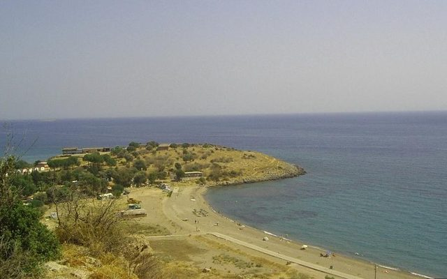
レベドス古代都市イズミル · İyon / ローマリュキア文明博物館とアンドリアケ遺跡アンタルヤ · リュキア / ローマリミラ遺跡アンタルヤ · リュキア / ローママガルソス古代都市アダナ · ヘレニズム / ローママグネシア遺跡アイドゥン · ヘレニズム / ローママニサ・アクヒサル博物館とアクヒサル・テペ墓地マニサ · ヘレニズム / ローマメトロポリス遺跡イズミル · ヘレニズム / ローマ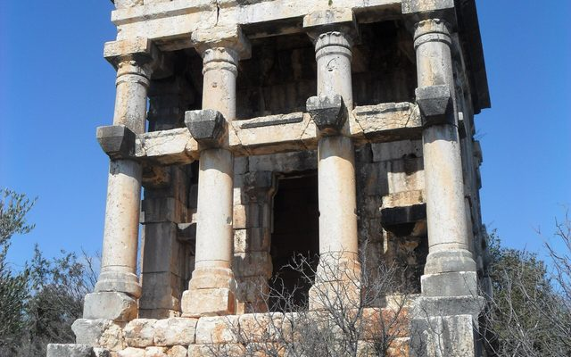
メズギトカレ記念墓メルスィン · ローマミラス・エウロモス遺跡ムーラ · ヘレニズム / ローマミレトス遺跡アイドゥン · アルカイック期 / ローマ ミスィス（モプスエスティア）古代都市アダナ · ローマ / ビザンツミュラ遺跡アンタルヤ · リュキア / ローマニーデ・アンダヴァル遺跡ニーデ · ローマ / ビザンツノティオン古代都市イズミル · ヘレニズム / ローマニサ遺跡（スルタンヒサル）アイドゥン · ヘレニズム / ローマオイノアンダ古代都市ムーラ · リュキア / ローマオルバ古代都市メルスィン · ヘレニズム / ローマオリンポス遺跡アンタルヤ · リュキア / ローマパリオン古代都市チャナッカレ · ヘレニズム / ローマパタラ遺跡アンタルヤ · リュキア / ローマペドネリッソス古代都市アンタルヤ · ヘレニズム / ローマペルゲ遺跡アンタルヤ · ヘレニズム / ローマペルペレネ古代都市バルケシル · ヘレニズム / ローマペッレ遺跡アドゥヤマン · コンマゲネ / ローマペッシヌス遺跡エスキシェヒル · フリギア / ヘレニズム / ローマファセリス遺跡アンタルヤ · リュキア / ローマフォカイア（フォチャ）古代都市イズミル · アルカイック期 / ローマピシディアのアンティオキア古代都市ウスパルタ · ヘレニズム / ローマポンペイオポリス古代都市カスタモヌ · ローマ
ミスィス（モプスエスティア）古代都市アダナ · ローマ / ビザンツミュラ遺跡アンタルヤ · リュキア / ローマニーデ・アンダヴァル遺跡ニーデ · ローマ / ビザンツノティオン古代都市イズミル · ヘレニズム / ローマニサ遺跡（スルタンヒサル）アイドゥン · ヘレニズム / ローマオイノアンダ古代都市ムーラ · リュキア / ローマオルバ古代都市メルスィン · ヘレニズム / ローマオリンポス遺跡アンタルヤ · リュキア / ローマパリオン古代都市チャナッカレ · ヘレニズム / ローマパタラ遺跡アンタルヤ · リュキア / ローマペドネリッソス古代都市アンタルヤ · ヘレニズム / ローマペルゲ遺跡アンタルヤ · ヘレニズム / ローマペルペレネ古代都市バルケシル · ヘレニズム / ローマペッレ遺跡アドゥヤマン · コンマゲネ / ローマペッシヌス遺跡エスキシェヒル · フリギア / ヘレニズム / ローマファセリス遺跡アンタルヤ · リュキア / ローマフォカイア（フォチャ）古代都市イズミル · アルカイック期 / ローマピシディアのアンティオキア古代都市ウスパルタ · ヘレニズム / ローマポンペイオポリス古代都市カスタモヌ · ローマ プルシアス・アド・ヒュピウム（コヌラルプ）古代都市デュズジェ · ローマロディアポリス古代都市アンタルヤ · リュキア / ローマ
プルシアス・アド・ヒュピウム（コヌラルプ）古代都市デュズジェ · ローマロディアポリス古代都市アンタルヤ · リュキア / ローマ アンカラのローマ浴場アンカラ · ローマサガラッソス遺跡ブルドゥル · ヘレニズム / ローマサラミス遺跡ガズィマウサ（ファマグスタ） · 青銅器時代 / ローマ / ビザンツサルディス遺跡マニサ · リディア / ローマ
アンカラのローマ浴場アンカラ · ローマサガラッソス遺跡ブルドゥル · ヘレニズム / ローマサラミス遺跡ガズィマウサ（ファマグスタ） · 青銅器時代 / ローマ / ビザンツサルディス遺跡マニサ · リディア / ローマ サルカヤ・ローマ浴場ヨズガト · ローマ
サルカヤ・ローマ浴場ヨズガト · ローマ サタラ古代都市ギュミュシュハーネ · ローマセバストポリス古代都市トカト · ローマセディル島遺跡ムーラ · ヘレニズム / ローマセレウケイア（パンフィリア）古代都市アンタルヤ · ヘレニズム / ローマセルゲ古代都市アンタルヤ · ヘレニズム / ローマ
サタラ古代都市ギュミュシュハーネ · ローマセバストポリス古代都市トカト · ローマセディル島遺跡ムーラ · ヘレニズム / ローマセレウケイア（パンフィリア）古代都市アンタルヤ · ヘレニズム / ローマセルゲ古代都市アンタルヤ · ヘレニズム / ローマ セリヌス古代都市アンタルヤ · ローマシデ遺跡アンタルヤ · ヘレニズム / ローマシデュマ古代都市ムーラ · リュキア / ローマシッリオン古代都市アンタルヤ · ヘレニズム / ローマ
セリヌス古代都市アンタルヤ · ローマシデ遺跡アンタルヤ · ヘレニズム / ローマシデュマ古代都市ムーラ · リュキア / ローマシッリオン古代都市アンタルヤ · ヘレニズム / ローマ ソベソス古代都市（シャヒンエフェンディ）ネヴシェヒル · ローマ / ビザンツソベソス遺跡ネヴシェヒル · ローマ / ビザンツソフラズ記念墓アドゥヤマン · ヘレニズム / ローマソリ・ポンペイオポリス古代都市メルスィン · ヘレニズム / ローマソリ遺跡レフケ · アルカイック期 / ローマ
ソベソス古代都市（シャヒンエフェンディ）ネヴシェヒル · ローマ / ビザンツソベソス遺跡ネヴシェヒル · ローマ / ビザンツソフラズ記念墓アドゥヤマン · ヘレニズム / ローマソリ・ポンペイオポリス古代都市メルスィン · ヘレニズム / ローマソリ遺跡レフケ · アルカイック期 / ローマ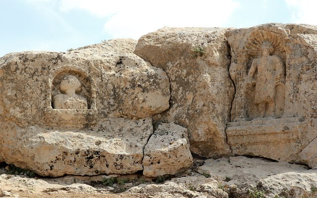
ソーマタル古代都市シャンルウルファ · ローマ / Sabiiストラトニケイア遺跡ムーラ · ヘレニズム – オスマン スルタンアフメト広場（ヒッポドローム）イスタンブール · ローマ / ビザンツ
スルタンアフメト広場（ヒッポドローム）イスタンブール · ローマ / ビザンツ タプレリ古代都市メルスィン · ローマ / ビザンツ
タプレリ古代都市メルスィン · ローマ / ビザンツ タルスス古代ローマ街道メルスィン · ローマタルスス・ギョズリュクレメルスィン · 青銅器時代 – ローマ
タルスス古代ローマ街道メルスィン · ローマタルスス・ギョズリュクレメルスィン · 青銅器時代 – ローマ タルスス・クレオパトラ門と古代の道メルスィン · ローマ
タルスス・クレオパトラ門と古代の道メルスィン · ローマ タルスス・聖パウロの井戸メルスィン · ローマ / 初期キリスト教
タルスス・聖パウロの井戸メルスィン · ローマ / 初期キリスト教 タシュキョプリュ（石橋）アダナ · ローマテルメッソス遺跡アンタルヤ · ヘレニズム / ローマティルバシャル城ガズィアンテプ · ローマ / 中世
タシュキョプリュ（石橋）アダナ · ローマテルメッソス遺跡アンタルヤ · ヘレニズム / ローマティルバシャル城ガズィアンテプ · ローマ / 中世 ティトゥス・トンネル（ウェスパシアヌス・トンネル）ハタイ · ローマトラレイス古代都市アイドゥン · ヘレニズム / ローマ
ティトゥス・トンネル（ウェスパシアヌス・トンネル）ハタイ · ローマトラレイス古代都市アイドゥン · ヘレニズム / ローマ トレベンナ古代都市アンタルヤ · ローマ / ビザンツ
トレベンナ古代都市アンタルヤ · ローマ / ビザンツ ティアナ古代都市とローマのプール（ケメルヒサル）ニーデ · ローマウズンジャブルチ遺跡メルスィン · ヘレニズム / ローマヴァン城ヴァン · ウラルトゥ – オスマン
ティアナ古代都市とローマのプール（ケメルヒサル）ニーデ · ローマウズンジャブルチ遺跡メルスィン · ヘレニズム / ローマヴァン城ヴァン · ウラルトゥ – オスマン ヤヌクハン遺跡メルスィン · ローマ / ビザンツユムクテペ遺丘メルスィン · 新石器時代 – 中世
ヤヌクハン遺跡メルスィン · ローマ / ビザンツユムクテペ遺丘メルスィン · 新石器時代 – 中世 ゼンギバル城（イサウラ）コンヤ · ローマ
ゼンギバル城（イサウラ）コンヤ · ローマ ゼルゼヴァン城ディヤルバクル · ローマゼウグマ遺跡ガズィアンテプ · ヘレニズム / ローマチャトゥオレン古代集落メルスィン · ヘレニズム / ローマ
ゼルゼヴァン城ディヤルバクル · ローマゼウグマ遺跡ガズィアンテプ · ヘレニズム / ローマチャトゥオレン古代集落メルスィン · ヘレニズム / ローマ チェンベルリタシュの円柱（コンスタンティヌスのフォルム）イスタンブール · ローマ / ビザンツチェヴリク遺跡ハタイ · ヘレニズム / ローマ
チェンベルリタシュの円柱（コンスタンティヌスのフォルム）イスタンブール · ローマ / ビザンツチェヴリク遺跡ハタイ · ヘレニズム / ローマ ユチャヤクル・ヴィラ・ルスティカメルスィン · ローマ / ビザンツイデュロス古代都市アンタルヤ · ローマ / ビザンツシャンルウルファ城シャンルウルファ · ヘレニズム – 中世シャル（コマナ）古代都市アダナ · ヒッタイト / ローマシュアイブ市シャンルウルファ · ローマ / İslamiボドルム水中考古学博物館ムーラ · 青銅器時代 – オスマンフェティエ博物館ムーラ · リュキア / ローマ
ユチャヤクル・ヴィラ・ルスティカメルスィン · ローマ / ビザンツイデュロス古代都市アンタルヤ · ローマ / ビザンツシャンルウルファ城シャンルウルファ · ヘレニズム – 中世シャル（コマナ）古代都市アダナ · ヒッタイト / ローマシュアイブ市シャンルウルファ · ローマ / İslamiボドルム水中考古学博物館ムーラ · 青銅器時代 – オスマンフェティエ博物館ムーラ · リュキア / ローマ ハレプリバフチェ・モザイク博物館シャンルウルファ · ローマ / ビザンツ
ハレプリバフチェ・モザイク博物館シャンルウルファ · ローマ / ビザンツ ハタイ考古学博物館ハタイ · ローマ / 複数の時代
ハタイ考古学博物館ハタイ · ローマ / 複数の時代 ヒエラポリス（パムッカレ）考古学博物館デニズリ · ローマ
ヒエラポリス（パムッカレ）考古学博物館デニズリ · ローマ コジャエリ考古学博物館コジャエリ · ローマ / 複数の時代
コジャエリ考古学博物館コジャエリ · ローマ / 複数の時代 コヌラルプ博物館デュズジェ · ローマ
コヌラルプ博物館デュズジェ · ローマ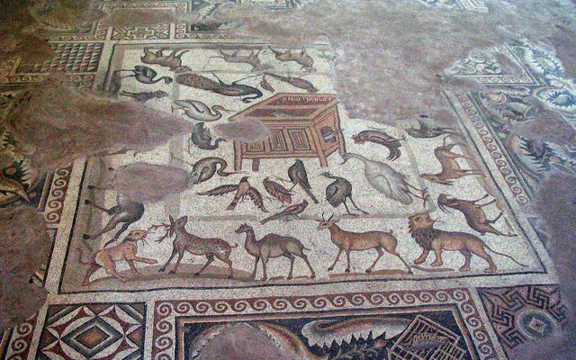
ミスィス・モザイク博物館アダナ · ローマ シデ博物館アンタルヤ · ローマ
シデ博物館アンタルヤ · ローマ スィリフケ・ナルルクユ・モザイク博物館メルスィン · ローマ
スィリフケ・ナルルクユ・モザイク博物館メルスィン · ローマ ヤルヴァチ博物館ウスパルタ · ローマ / 複数の時代
ヤルヴァチ博物館ウスパルタ · ローマ / 複数の時代 ゼウグマ・モザイク博物館ガズィアンテプ · ローマシャンルウルファ考古学博物館シャンルウルファ · 新石器時代 – オスマン
ゼウグマ・モザイク博物館ガズィアンテプ · ローマシャンルウルファ考古学博物館シャンルウルファ · 新石器時代 – オスマンビザンツと中世
330 – 1453 · 161 か所
 アニ遺跡カルス · 中世ベルガマ・赤いバシリカイズミル · ローマ / ビザンツ
アニ遺跡カルス · 中世ベルガマ・赤いバシリカイズミル · ローマ / ビザンツ デリンクユ地下都市ネヴシェヒル · ビザンツ
デリンクユ地下都市ネヴシェヒル · ビザンツ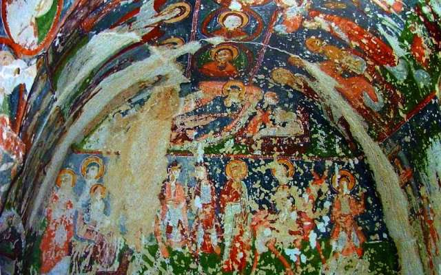
エル・ナザル教会ネヴシェヒル · ビザンツ (10世紀) ギョレメ遺跡ネヴシェヒル · ビザンツ (9–12世紀)
ギョレメ遺跡ネヴシェヒル · ビザンツ (9–12世紀) 暗闇の教会（ギョレメ）ネヴシェヒル · ビザンツ (11世紀)
暗闇の教会（ギョレメ）ネヴシェヒル · ビザンツ (11世紀) カイマクル地下都市ネヴシェヒル · ビザンツ
カイマクル地下都市ネヴシェヒル · ビザンツ ゼルヴェとパシャバー遺跡ネヴシェヒル · ビザンツ / オスマン
ゼルヴェとパシャバー遺跡ネヴシェヒル · ビザンツ / オスマン チャヴシン遺跡（チャヴシン教会）ネヴシェヒル · ビザンツアフヨンカラヒサール城アフヨンカラヒサール · ヒッタイト – オスマンアッカレ遺跡メルスィン · ローマ / ビザンツ
チャヴシン遺跡（チャヴシン教会）ネヴシェヒル · ビザンツアフヨンカラヒサール城アフヨンカラヒサール · ヒッタイト – オスマンアッカレ遺跡メルスィン · ローマ / ビザンツ アクサライ修道院渓谷遺跡アクサライ · ビザンツ
アクサライ修道院渓谷遺跡アクサライ · ビザンツ アクチャコジャ（ジェノヴァ）城デュズジェ · ジェノヴァ
アクチャコジャ（ジェノヴァ）城デュズジェ · ジェノヴァ アラハン修道院メルスィン · ビザンツアラシェヒル遺跡マニサ · ヘレニズム / ビザンツ
アラハン修道院メルスィン · ビザンツアラシェヒル遺跡マニサ · ヘレニズム / ビザンツ アマスラ城バルトゥン · ビザンツ / ジェノヴァアモリオン古代都市アフヨンカラヒサール · ローマ / ビザンツアナザルボス遺跡（アナヴァルザ）アダナ · ローマ / ビザンツアネムリウム遺跡メルスィン · ローマ / ビザンツアンカラ城アンカラ · ローマ – オスマン
アマスラ城バルトゥン · ビザンツ / ジェノヴァアモリオン古代都市アフヨンカラヒサール · ローマ / ビザンツアナザルボス遺跡（アナヴァルザ）アダナ · ローマ / ビザンツアネムリウム遺跡メルスィン · ローマ / ビザンツアンカラ城アンカラ · ローマ – オスマン アンティフォニティス教会ギルネ（キレニア） · ビザンツ (12世紀)
アンティフォニティス教会ギルネ（キレニア） · ビザンツ (12世紀) 使徒アンデレ修道院イスケレ（トリコモ） · ビザンツ / オスマン
使徒アンデレ修道院イスケレ（トリコモ） · ビザンツ / オスマン アヤ・イリニ記念博物館イスタンブール · ビザンツ (6世紀)
アヤ・イリニ記念博物館イスタンブール · ビザンツ (6世紀) アヤス（ユムルタルク）城アダナ · 中世
アヤス（ユムルタルク）城アダナ · 中世 アヤソフィア・ケビル・ジャーミーイスタンブール · ビザンツ / オスマン
アヤソフィア・ケビル・ジャーミーイスタンブール · ビザンツ / オスマン アヤスルク・聖ヨハネ教会遺跡イズミル · ビザンツ
アヤスルク・聖ヨハネ教会遺跡イズミル · ビザンツ アヤスルク城イズミル · ビザンツ / アナトリア諸侯国アギア・トリアス・バシリカイスケレ（トリコモ） · 初期キリスト教聖メルクリウス地下都市アクサライ · ビザンツ
アヤスルク城イズミル · ビザンツ / アナトリア諸侯国アギア・トリアス・バシリカイスケレ（トリコモ） · 初期キリスト教聖メルクリウス地下都市アクサライ · ビザンツ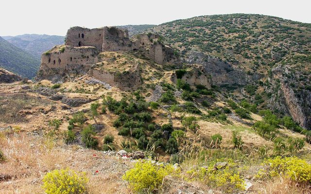
バクラス城ハタイ · 中世 バルクルギョルとハリールッラフマン・モスクシャンルウルファ · 中世 / オスマン
バルクルギョルとハリールッラフマン・モスクシャンルウルファ · 中世 / オスマン ベラパイス修道院ギルネ（キレニア） · リュジニャン朝
ベラパイス修道院ギルネ（キレニア） · リュジニャン朝 ビンビル・キリセカラマン · ビザンツ
ビンビル・キリセカラマン · ビザンツ ビンビルディレク貯水池イスタンブール · ビザンツ
ビンビルディレク貯水池イスタンブール · ビザンツ ビトリス城ビトリス · 中世 / オスマン
ビトリス城ビトリス · 中世 / オスマン ボラマン城とハズィネダルオウル邸オルドゥ · 中世 / オスマン
ボラマン城とハズィネダルオウル邸オルドゥ · 中世 / オスマン ブッファヴェント城ギルネ（キレニア） · ビザンツ / リュジニャン朝
ブッファヴェント城ギルネ（キレニア） · ビザンツ / リュジニャン朝 ブルサ・イズニク湖のバシリカブルサ · ビザンツ
ブルサ・イズニク湖のバシリカブルサ · ビザンツ ジズレの赤いメドレセシュルナク · 中世
ジズレの赤いメドレセシュルナク · 中世 ダラ遺跡マルディン · ビザンツデルベ遺丘カラマン · ローマ / ビザンツ
ダラ遺跡マルディン · ビザンツデルベ遺丘カラマン · ローマ / ビザンツ デイルルザファラン修道院マルディン · 初期キリスト教 / ビザンツディヤルバクル城壁ディヤルバクル · ローマ – オスマンエディルネ・マケドニア塔エディルネ · ローマ / ビザンツ / オスマンエフェソス遺跡・テラスハウスイズミル · ローマ / ビザンツ
デイルルザファラン修道院マルディン · 初期キリスト教 / ビザンツディヤルバクル城壁ディヤルバクル · ローマ – オスマンエディルネ・マケドニア塔エディルネ · ローマ / ビザンツ / オスマンエフェソス遺跡・テラスハウスイズミル · ローマ / ビザンツ エネズ城（アイノス）エディルネ · 古代 / ビザンツ / オスマン
エネズ城（アイノス）エディルネ · 古代 / ビザンツ / オスマン エルズルム城エルズルム · ビザンツ / セルジューク / オスマンエテンナ古代都市アンタルヤ · ローマ / ビザンツエーイル城と預言者の墓廟ディヤルバクル · Asur – オスマン
エルズルム城エルズルム · ビザンツ / セルジューク / オスマンエテンナ古代都市アンタルヤ · ローマ / ビザンツエーイル城と預言者の墓廟ディヤルバクル · Asur – オスマン フェティエ・ゲミレル島ムーラ · ビザンツフェティエ・トロス遺跡ムーラ · 青銅器時代 – オスマンフィルダム貯水池イスタンブール · ビザンツフィリョス（ティオス）遺跡ゾングルダク · ヘレニズム – ビザンツガガイ古代都市アンタルヤ · リュキア / ビザンツ
フェティエ・ゲミレル島ムーラ · ビザンツフェティエ・トロス遺跡ムーラ · 青銅器時代 – オスマンフィルダム貯水池イスタンブール · ビザンツフィリョス（ティオス）遺跡ゾングルダク · ヘレニズム – ビザンツガガイ古代都市アンタルヤ · リュキア / ビザンツ ガズィアンテプ城ガズィアンテプ · ビザンツ / マムルーク朝 / オスマン
ガズィアンテプ城ガズィアンテプ · ビザンツ / マムルーク朝 / オスマン ギレスン城ギレスン · Pontus / ビザンツ
ギレスン城ギレスン · Pontus / ビザンツ キレニア城と沈没船博物館ギルネ（キレニア） · ビザンツ / ヴェネツィアギョクカレ遺跡メルスィン · ローマ / ビザンツ
キレニア城と沈没船博物館ギルネ（キレニア） · ビザンツ / ヴェネツィアギョクカレ遺跡メルスィン · ローマ / ビザンツ ギョズネ城メルスィン · 中世
ギョズネ城メルスィン · 中世 ギュルシェヒル・聖ヨハネ教会ネヴシェヒル · ビザンツ (13世紀)
ギュルシェヒル・聖ヨハネ教会ネヴシェヒル · ビザンツ (13世紀) ギュミュシュレル修道院と地下都市ニーデ · ビザンツ
ギュミュシュレル修道院と地下都市ニーデ · ビザンツ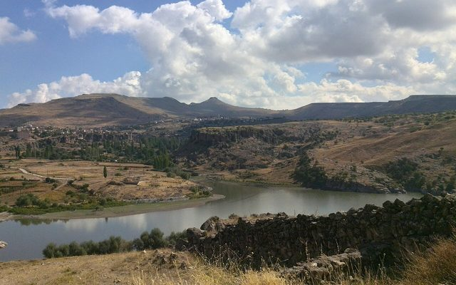
ギュゼルユルト修道院渓谷アクサライ · ビザンツ クトゥツ（グドゥツ）修道院ヴァン · 中世ハドリアノポリス遺跡カラビュク · ローマ / ビザンツハルプト城エラズー · ウラルトゥ / 中世ハッラン遺跡シャンルウルファ · 青銅器時代 – 中世ヘラクレイア（ラトモス）古代都市ムーラ · ヘレニズム / ビザンツイアソス遺跡ムーラ · 青銅器時代 – ビザンツ
クトゥツ（グドゥツ）修道院ヴァン · 中世ハドリアノポリス遺跡カラビュク · ローマ / ビザンツハルプト城エラズー · ウラルトゥ / 中世ハッラン遺跡シャンルウルファ · 青銅器時代 – 中世ヘラクレイア（ラトモス）古代都市ムーラ · ヘレニズム / ビザンツイアソス遺跡ムーラ · 青銅器時代 – ビザンツ ウフララ渓谷遺跡アクサライ · ビザンツユリオポリスのネクロポリスアンカラ · ローマ / ビザンツ
ウフララ渓谷遺跡アクサライ · ビザンツユリオポリスのネクロポリスアンカラ · ローマ / ビザンツ ユスティニアヌス橋（ベシュキョプリュ）サカリヤ · ビザンツカドゥ城遺跡アイドゥン · ビザンツ / 中世キャフタ・イェニ城遺跡アドゥヤマン · コンマゲネ / 中世カンルディヴァーネ遺跡メルスィン · ヘレニズム / ローマ / ビザンツカンルディヴァーネ（カニュテリス）メルスィン · ヘレニズム / ビザンツ
ユスティニアヌス橋（ベシュキョプリュ）サカリヤ · ビザンツカドゥ城遺跡アイドゥン · ビザンツ / 中世キャフタ・イェニ城遺跡アドゥヤマン · コンマゲネ / 中世カンルディヴァーネ遺跡メルスィン · ヘレニズム / ローマ / ビザンツカンルディヴァーネ（カニュテリス）メルスィン · ヘレニズム / ビザンツ カンタラ城イスケレ（トリコモ） · ビザンツ / リュジニャン朝カラカバクル古代集落メルスィン · ローマ / ビザンツ
カンタラ城イスケレ（トリコモ） · ビザンツ / リュジニャン朝カラカバクル古代集落メルスィン · ローマ / ビザンツ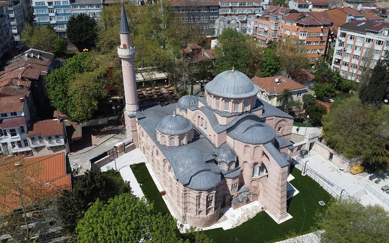
カーリエ・モスク（コーラ）イスタンブール · ビザンツ / オスマンカスタバラ遺跡オスマニエ · ヘレニズム / ローマ / 中世 カスミエ・メドレセマルディン · Artuklu / Akkoyunlu
カスミエ・メドレセマルディン · Artuklu / Akkoyunlu ケスキン・スル洞窟地下都市クルッカレ · ビザンツ / 中世キリストラ古代都市コンヤ · ローマ / ビザンツコリュコスとクズカレスィメルスィン · ローマ / 中世
ケスキン・スル洞窟地下都市クルッカレ · ビザンツ / 中世キリストラ古代都市コンヤ · ローマ / ビザンツコリュコスとクズカレスィメルスィン · ローマ / 中世 キュタヒヤ城キュタヒヤ · ビザンツ / Germiyan
キュタヒヤ城キュタヒヤ · ビザンツ / Germiyan 小アイヴァスル（聖アンナ）教会トラブゾン · ビザンツ (9世紀)
小アイヴァスル（聖アンナ）教会トラブゾン · ビザンツ (9世紀) 乙女の塔イスタンブール · ビザンツ / オスマン
乙女の塔イスタンブール · ビザンツ / オスマン ララ・ムスタファ・パシャ・モスクガズィマウサ（ファマグスタ） · リュジニャン朝 / オスマンランブーサ（ラピトス）古代都市ギルネ（キレニア） · ローマ / ビザンツラモス古代都市アンタルヤ · ローマ / ビザンツ
ララ・ムスタファ・パシャ・モスクガズィマウサ（ファマグスタ） · リュジニャン朝 / オスマンランブーサ（ラピトス）古代都市ギルネ（キレニア） · ローマ / ビザンツラモス古代都市アンタルヤ · ローマ / ビザンツ マラバディ橋ディヤルバクル · Artuklu
マラバディ橋ディヤルバクル · Artuklu マムレ城メルスィン · 中世 / オスマンマズ地下都市ネヴシェヒル · ビザンツ
マムレ城メルスィン · 中世 / オスマンマズ地下都市ネヴシェヒル · ビザンツ メルスィン・クズ城メルスィン · ビザンツ / 中世
メルスィン・クズ城メルスィン · ビザンツ / 中世 聖母マリアの家イズミル · ビザンツ
聖母マリアの家イズミル · ビザンツ 聖母マリア修道院（ギレスン）ギレスン · ビザンツミスィス（モプスエスティア）古代都市アダナ · ローマ / ビザンツ
聖母マリア修道院（ギレスン）ギレスン · ビザンツミスィス（モプスエスティア）古代都市アダナ · ローマ / ビザンツ モル・ガブリエル修道院マルディン · 初期キリスト教ムジュル地下都市クルシェヒル · ビザンツ / 中世
モル・ガブリエル修道院マルディン · 初期キリスト教ムジュル地下都市クルシェヒル · ビザンツ / 中世 ナムルン城メルスィン · ビザンツ / Ermeniニーデ・アンダヴァル遺跡ニーデ · ローマ / ビザンツ
ナムルン城メルスィン · ビザンツ / Ermeniニーデ・アンダヴァル遺跡ニーデ · ローマ / ビザンツ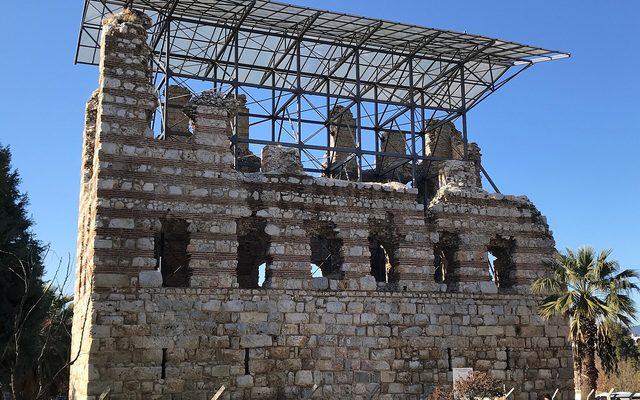
ニュンファイオン（ニフ）ラスカリス宮殿イズミル · ビザンツ オセロ城ガズィマウサ（ファマグスタ） · リュジニャン朝 / ヴェネツィア
オセロ城ガズィマウサ（ファマグスタ） · リュジニャン朝 / ヴェネツィア ルムカレ遺跡ガズィアンテプ · 中世サラミス遺跡ガズィマウサ（ファマグスタ） · 青銅器時代 / ローマ / ビザンツ
ルムカレ遺跡ガズィアンテプ · 中世サラミス遺跡ガズィマウサ（ファマグスタ） · 青銅器時代 / ローマ / ビザンツ サラトル・クルクギョズ地下都市アクサライ · ビザンツ
サラトル・クルクギョズ地下都市アクサライ · ビザンツ セリミエ・モスクレフコシャ（ニコシア） · リュジニャン朝 / オスマン
セリミエ・モスクレフコシャ（ニコシア） · リュジニャン朝 / オスマン スィリフケ・アヤテクラ遺跡メルスィン · 初期キリスト教 / ビザンツ
スィリフケ・アヤテクラ遺跡メルスィン · 初期キリスト教 / ビザンツ スィリフケ・天国と地獄の陥没穴メルスィン · 自然景勝地 / ビザンツ
スィリフケ・天国と地獄の陥没穴メルスィン · 自然景勝地 / ビザンツ スィリフケ城メルスィン · ビザンツ / 中世
スィリフケ城メルスィン · ビザンツ / 中世 スィッレと聖ヘレナ教会コンヤ · ビザンツ / オスマンシメナ遺跡アンタルヤ · リュキア / ビザンツソベソス古代都市（シャヒンエフェンディ）ネヴシェヒル · ローマ / ビザンツソベソス遺跡ネヴシェヒル · ローマ / ビザンツ
スィッレと聖ヘレナ教会コンヤ · ビザンツ / オスマンシメナ遺跡アンタルヤ · リュキア / ビザンツソベソス古代都市（シャヒンエフェンディ）ネヴシェヒル · ローマ / ビザンツソベソス遺跡ネヴシェヒル · ローマ / ビザンツ ソフタ城メルスィン · ビザンツ / Ermeni
ソフタ城メルスィン · ビザンツ / Ermeni 聖バルナバ修道院ガズィマウサ（ファマグスタ） · 初期キリスト教 / オスマン
聖バルナバ修道院ガズィマウサ（ファマグスタ） · 初期キリスト教 / オスマン 聖ヒラリオン城ギルネ（キレニア） · ビザンツ / リュジニャン朝
聖ヒラリオン城ギルネ（キレニア） · ビザンツ / リュジニャン朝 聖シメオン修道院ハタイ · ビザンツストラトニケイア遺跡ムーラ · ヘレニズム – オスマンスルタンアフメト広場（ヒッポドローム）イスタンブール · ローマ / ビザンツ
聖シメオン修道院ハタイ · ビザンツストラトニケイア遺跡ムーラ · ヘレニズム – オスマンスルタンアフメト広場（ヒッポドローム）イスタンブール · ローマ / ビザンツ スメラ修道院トラブゾン · ビザンツ – 20世紀タプレリ古代都市メルスィン · ローマ / ビザンツタルスス・聖パウロの井戸メルスィン · ローマ / 初期キリスト教
スメラ修道院トラブゾン · ビザンツ – 20世紀タプレリ古代都市メルスィン · ローマ / ビザンツタルスス・聖パウロの井戸メルスィン · ローマ / 初期キリスト教 タトラリン地下都市ネヴシェヒル · ビザンツ
タトラリン地下都市ネヴシェヒル · ビザンツ テオドシウスのフォルムの遺構イスタンブール · ビザンツ
テオドシウスのフォルムの遺構イスタンブール · ビザンツ テオドシウスの城壁イスタンブール · ビザンツティルバシャル城ガズィアンテプ · ローマ / 中世
テオドシウスの城壁イスタンブール · ビザンツティルバシャル城ガズィアンテプ · ローマ / 中世 トラブゾン・アヤソフィア・モスクトラブゾン · ビザンツトレベンナ古代都市アンタルヤ · ローマ / ビザンツヴァン城ヴァン · ウラルトゥ – オスマンヴィゼ・アヤソフィア（ガーズィー・スレイマン・パシャ・モスク）クルクラーレリ · ビザンツヤヌクハン遺跡メルスィン · ローマ / ビザンツ
トラブゾン・アヤソフィア・モスクトラブゾン · ビザンツトレベンナ古代都市アンタルヤ · ローマ / ビザンツヴァン城ヴァン · ウラルトゥ – オスマンヴィゼ・アヤソフィア（ガーズィー・スレイマン・パシャ・モスク）クルクラーレリ · ビザンツヤヌクハン遺跡メルスィン · ローマ / ビザンツ イェディクレ要塞イスタンブール · ビザンツ / オスマン
イェディクレ要塞イスタンブール · ビザンツ / オスマン 地下宮殿（イェレバタン貯水池）イスタンブール · ビザンツ (6世紀)
地下宮殿（イェレバタン貯水池）イスタンブール · ビザンツ (6世紀) イェシルヒサル・ソアンル遺跡カイセリ · ビザンツユムクテペ遺丘メルスィン · 新石器時代 – 中世ユランカレアダナ · Kilikya Ermeni Krallığı
イェシルヒサル・ソアンル遺跡カイセリ · ビザンツユムクテペ遺丘メルスィン · 新石器時代 – 中世ユランカレアダナ · Kilikya Ermeni Krallığı ズィルカレリゼ · 中世
ズィルカレリゼ · 中世 ズィンジリエ・メドレセディヤルバクル · Artukluチェンベルリタシュの円柱（コンスタンティヌスのフォルム）イスタンブール · ローマ / ビザンツ
ズィンジリエ・メドレセディヤルバクル · Artukluチェンベルリタシュの円柱（コンスタンティヌスのフォルム）イスタンブール · ローマ / ビザンツ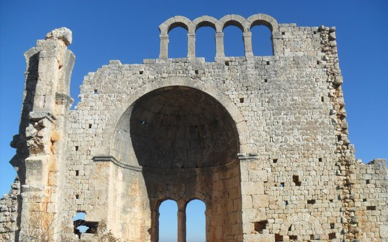
オキュズリュ遺跡メルスィン · ビザンツ オズコナク地下都市ネヴシェヒル · ビザンツユチャヤクル・ヴィラ・ルスティカメルスィン · ローマ / ビザンツイデュロス古代都市アンタルヤ · ローマ / ビザンツ
オズコナク地下都市ネヴシェヒル · ビザンツユチャヤクル・ヴィラ・ルスティカメルスィン · ローマ / ビザンツイデュロス古代都市アンタルヤ · ローマ / ビザンツ イムラホル・イリヤス・ベイ・モスク（ストゥディオス修道院）イスタンブール · ビザンツ
イムラホル・イリヤス・ベイ・モスク（ストゥディオス修道院）イスタンブール · ビザンツ イスタンブール・ガラタ塔イスタンブール · ジェノヴァ / オスマンシャンルウルファ城シャンルウルファ · ヘレニズム – 中世
イスタンブール・ガラタ塔イスタンブール · ジェノヴァ / オスマンシャンルウルファ城シャンルウルファ · ヘレニズム – 中世 シェレフィエ貯水池イスタンブール · ビザンツ
シェレフィエ貯水池イスタンブール · ビザンツ アクダマル記念博物館ヴァン · 中世 (10世紀)
アクダマル記念博物館ヴァン · 中世 (10世紀) アヤソフィア歴史体験博物館イスタンブール · ビザンツ / オスマン
アヤソフィア歴史体験博物館イスタンブール · ビザンツ / オスマン 聖ニコラオス記念博物館アンタルヤ · ビザンツ
聖ニコラオス記念博物館アンタルヤ · ビザンツ ボドルム・セルチェ・リマヌ・ガラス沈没船展示室ムーラ · 中世 (11世紀)ボドルム水中考古学博物館ムーラ · 青銅器時代 – オスマン
ボドルム・セルチェ・リマヌ・ガラス沈没船展示室ムーラ · 中世 (11世紀)ボドルム水中考古学博物館ムーラ · 青銅器時代 – オスマン 大宮殿モザイク博物館イスタンブール · ビザンツ
大宮殿モザイク博物館イスタンブール · ビザンツ フェティエ博物館イスタンブール · ビザンツハレプリバフチェ・モザイク博物館シャンルウルファ · ローマ / ビザンツ
フェティエ博物館イスタンブール · ビザンツハレプリバフチェ・モザイク博物館シャンルウルファ · ローマ / ビザンツ ラピダリ博物館レフコシャ（ニコシア） · リュジニャン朝 / ヴェネツィア
ラピダリ博物館レフコシャ（ニコシア） · リュジニャン朝 / ヴェネツィア ナームク・ケマル牢獄と博物館ガズィマウサ（ファマグスタ） · ヴェネツィア / オスマン
ナームク・ケマル牢獄と博物館ガズィマウサ（ファマグスタ） · ヴェネツィア / オスマン 聖ペテロ記念博物館ハタイ · 初期キリスト教
聖ペテロ記念博物館ハタイ · 初期キリスト教 タルスス・聖パウロ記念博物館メルスィン · オスマン / キリスト教
タルスス・聖パウロ記念博物館メルスィン · オスマン / キリスト教 イスケレ・イコン博物館イスケレ（トリコモ） · ビザンツ (12世紀)シャンルウルファ考古学博物館シャンルウルファ · 新石器時代 – オスマン
イスケレ・イコン博物館イスケレ（トリコモ） · ビザンツ (12世紀)シャンルウルファ考古学博物館シャンルウルファ · 新石器時代 – オスマンセルジューク朝と諸侯国
1071 – 1400 · 49 か所
 アフヨン・メヴレヴィー修道場（スルタン・ディヴァーニ）アフヨンカラヒサール · セルジューク / オスマンアフヨンカラヒサール城アフヨンカラヒサール · ヒッタイト – オスマン
アフヨン・メヴレヴィー修道場（スルタン・ディヴァーニ）アフヨンカラヒサール · セルジューク / オスマンアフヨンカラヒサール城アフヨンカラヒサール · ヒッタイト – オスマン アフラト・セルジューク墓地ビトリス · セルジューク / アナトリア諸侯国
アフラト・セルジューク墓地ビトリス · セルジューク / アナトリア諸侯国 アラエッディン・モスクコンヤ · セルジューク
アラエッディン・モスクコンヤ · セルジューク アランヤ城アンタルヤ · セルジューク
アランヤ城アンタルヤ · セルジューク アララハンアンタルヤ · セルジューク
アララハンアンタルヤ · セルジューク アライ・ハンアクサライ · セルジュークアンカラ城アンカラ · ローマ – オスマン
アライ・ハンアクサライ · セルジュークアンカラ城アンカラ · ローマ – オスマン アスハーブ・ケフフ複合施設カフラマンマラシュ · セルジューク / オスマンアヤスルク城イズミル · ビザンツ / アナトリア諸侯国
アスハーブ・ケフフ複合施設カフラマンマラシュ · セルジューク / オスマンアヤスルク城イズミル · ビザンツ / アナトリア諸侯国 アーズカラ・ハンアクサライ · セルジューク
アーズカラ・ハンアクサライ · セルジューク ジャジャベイ・メドレセクルシェヒル · セルジューク
ジャジャベイ・メドレセクルシェヒル · セルジューク ディヴリーの大モスクと病院スィヴァス · セルジューク (13世紀)ディヤルバクル城壁ディヤルバクル · ローマ – オスマン
ディヴリーの大モスクと病院スィヴァス · セルジューク (13世紀)ディヤルバクル城壁ディヤルバクル · ローマ – オスマン ディヤルバクル・ウル・モスクディヤルバクル · セルジュークエルズルム城エルズルム · ビザンツ / セルジューク / オスマンエーイル城と預言者の墓廟ディヤルバクル · Asur – オスマンフェティエ・トロス遺跡ムーラ · 青銅器時代 – オスマンガズィアンテプ城ガズィアンテプ · ビザンツ / マムルーク朝 / オスマン
ディヤルバクル・ウル・モスクディヤルバクル · セルジュークエルズルム城エルズルム · ビザンツ / セルジューク / オスマンエーイル城と預言者の墓廟ディヤルバクル · Asur – オスマンフェティエ・トロス遺跡ムーラ · 青銅器時代 – オスマンガズィアンテプ城ガズィアンテプ · ビザンツ / マムルーク朝 / オスマン ハン・エル・バルール隊商宿シャンルウルファ · セルジューク
ハン・エル・バルール隊商宿シャンルウルファ · セルジューク カルス城カルス · セルジューク / オスマンカイセリ城カイセリ · ローマ / セルジューク
カルス城カルス · セルジューク / オスマンカイセリ城カイセリ · ローマ / セルジューク クバダバード宮殿コンヤ · セルジュークキョプリュパザル（アスペンドス）橋アンタルヤ · ローマ / セルジューク
クバダバード宮殿コンヤ · セルジュークキョプリュパザル（アスペンドス）橋アンタルヤ · ローマ / セルジューク クズル・クレ（赤い塔）アンタルヤ · セルジューク
クズル・クレ（赤い塔）アンタルヤ · セルジューク マフムト・ベイ・モスクカスタモヌ · アナトリア諸侯国
マフムト・ベイ・モスクカスタモヌ · アナトリア諸侯国 ミラス・ベチン城と遺跡ムーラ · 古代 / メンテシェ侯国
ミラス・ベチン城と遺跡ムーラ · 古代 / メンテシェ侯国 ナコレイアとセイイトガーズィー複合施設エスキシェヒル · セルジューク / オスマン
ナコレイアとセイイトガーズィー複合施設エスキシェヒル · セルジューク / オスマン サーヒビエ・メドレセカイセリ · セルジューク
サーヒビエ・メドレセカイセリ · セルジューク サルハン隊商宿ネヴシェヒル · セルジューク
サルハン隊商宿ネヴシェヒル · セルジューク スィイルトのウル・ジャーミィスィイルト · セルジュークストラトニケイア遺跡ムーラ · ヘレニズム – オスマン
スィイルトのウル・ジャーミィスィイルト · セルジュークストラトニケイア遺跡ムーラ · ヘレニズム – オスマン スルタンハン隊商宿アクサライ · セルジュークスメラ修道院トラブゾン · ビザンツ – 20世紀ヴァン城ヴァン · ウラルトゥ – オスマン
スルタンハン隊商宿アクサライ · セルジュークスメラ修道院トラブゾン · ビザンツ – 20世紀ヴァン城ヴァン · ウラルトゥ – オスマン イヴリ・ミナレ・モスクアンタルヤ · セルジューク
イヴリ・ミナレ・モスクアンタルヤ · セルジューク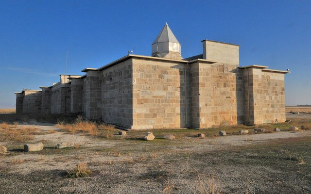
ザザディン・ハンコンヤ · セルジューク ユチュ・キュンベトレル（三つの墓廟）エルズルム · Saltuklu
ユチュ・キュンベトレル（三つの墓廟）エルズルム · Saltuklu シャラプサ・ハンアンタルヤ · セルジュークボドルム水中考古学博物館ムーラ · 青銅器時代 – オスマン
シャラプサ・ハンアンタルヤ · セルジュークボドルム水中考古学博物館ムーラ · 青銅器時代 – オスマン 民俗学博物館アンカラ · セルジューク / オスマン / 共和国時代
民俗学博物館アンカラ · セルジューク / オスマン / 共和国時代 ハジュベクタシュ博物館ネヴシェヒル · セルジューク / オスマン
ハジュベクタシュ博物館ネヴシェヒル · セルジューク / オスマン カラタイ（タイル）博物館コンヤ · セルジューク
カラタイ（タイル）博物館コンヤ · セルジューク コンヤ・パノラマ博物館コンヤ · セルジュークマラズギルト博物館ムシュ · セルジューク (1071)
コンヤ・パノラマ博物館コンヤ · セルジュークマラズギルト博物館ムシュ · セルジューク (1071) メヴラーナ博物館コンヤ · セルジューク / オスマンメヴレヴィー修道場博物館アンタルヤ · セルジューク / オスマン
メヴラーナ博物館コンヤ · セルジューク / オスマンメヴレヴィー修道場博物館アンタルヤ · セルジューク / オスマン トルコ・イスラム美術博物館（イスタンブール）イスタンブール · セルジューク / オスマンシャンルウルファ考古学博物館シャンルウルファ · 新石器時代 – オスマン
トルコ・イスラム美術博物館（イスタンブール）イスタンブール · セルジューク / オスマンシャンルウルファ考古学博物館シャンルウルファ · 新石器時代 – オスマンオスマン時代
1299 – 1922 · 172 か所
ゼルヴェとパシャバー遺跡ネヴシェヒル · ビザンツ / オスマンアフヨン・メヴレヴィー修道場（スルタン・ディヴァーニ）アフヨンカラヒサール · セルジューク / オスマンアフヨンカラヒサール城アフヨンカラヒサール · ヒッタイト – オスマン アフリダ・シナゴーグイスタンブール · オスマン (15世紀)アクシェムセッティン廟ボル · オスマン
アフリダ・シナゴーグイスタンブール · オスマン (15世紀)アクシェムセッティン廟ボル · オスマン アナドル・ヒサルイスタンブール · オスマンアンカラ城アンカラ · ローマ – オスマン使徒アンデレ修道院イスケレ（トリコモ） · ビザンツ / オスマンアスハーブ・ケフフ複合施設カフラマンマラシュ · セルジューク / オスマンアヤソフィア・ケビル・ジャーミーイスタンブール · ビザンツ / オスマン
アナドル・ヒサルイスタンブール · オスマンアンカラ城アンカラ · ローマ – オスマン使徒アンデレ修道院イスケレ（トリコモ） · ビザンツ / オスマンアスハーブ・ケフフ複合施設カフラマンマラシュ · セルジューク / オスマンアヤソフィア・ケビル・ジャーミーイスタンブール · ビザンツ / オスマン アイナルカヴァク離宮イスタンブール · オスマン (18世紀)バルクルギョルとハリールッラフマン・モスクシャンルウルファ · 中世 / オスマン
アイナルカヴァク離宮イスタンブール · オスマン (18世紀)バルクルギョルとハリールッラフマン・モスクシャンルウルファ · 中世 / オスマン ベイレルベイ宮殿イスタンブール · オスマン (19世紀)ビトリス城ビトリス · 中世 / オスマンボラマン城とハズィネダルオウル邸オルドゥ · 中世 / オスマン
ベイレルベイ宮殿イスタンブール · オスマン (19世紀)ビトリス城ビトリス · 中世 / オスマンボラマン城とハズィネダルオウル邸オルドゥ · 中世 / オスマン ブルガリア聖ステファン教会（鉄の教会）イスタンブール · オスマン (19世紀)
ブルガリア聖ステファン教会（鉄の教会）イスタンブール · オスマン (19世紀) ブルサ・ウル・モスクブルサ · オスマン (14世紀)
ブルサ・ウル・モスクブルサ · オスマン (14世紀) ブルサ・イェシル・モスクとイェシル廟ブルサ · オスマン (15世紀)
ブルサ・イェシル・モスクとイェシル廟ブルサ · オスマン (15世紀) ビュユク・アー・メドレセアマスヤ · オスマン
ビュユク・アー・メドレセアマスヤ · オスマン ビュユク・ハンレフコシャ（ニコシア） · オスマン (16世紀)
ビュユク・ハンレフコシャ（ニコシア） · オスマン (16世紀) ジンジ・ハンカラビュク · オスマン
ジンジ・ハンカラビュク · オスマン ジュマルクズク村ブルサ · オスマンデミルキョイ鋳造所クルクラーレリ · オスマンディヤルバクル城壁ディヤルバクル · ローマ – オスマン
ジュマルクズク村ブルサ · オスマンデミルキョイ鋳造所クルクラーレリ · オスマンディヤルバクル城壁ディヤルバクル · ローマ – オスマン ドルマバフチェ宮殿イスタンブール · オスマン (19世紀)
ドルマバフチェ宮殿イスタンブール · オスマン (19世紀) エディルネ大シナゴーグエディルネ · オスマン (20世紀)エディルネ・マケドニア塔エディルネ · ローマ / ビザンツ / オスマン
エディルネ大シナゴーグエディルネ · オスマン (20世紀)エディルネ・マケドニア塔エディルネ · ローマ / ビザンツ / オスマン エディルネ宮殿（サライ・ジェディド）の遺構エディルネ · オスマン
エディルネ宮殿（サライ・ジェディド）の遺構エディルネ · オスマン エディルネ・セリミエ・モスクエディルネ · オスマン (16世紀)
エディルネ・セリミエ・モスクエディルネ · オスマン (16世紀) エミール・スルタン・モスクブルサ · オスマンエネズ城（アイノス）エディルネ · 古代 / ビザンツ / オスマンエルズルム城エルズルム · ビザンツ / セルジューク / オスマン
エミール・スルタン・モスクブルサ · オスマンエネズ城（アイノス）エディルネ · 古代 / ビザンツ / オスマンエルズルム城エルズルム · ビザンツ / セルジューク / オスマン エユップ・スルタン・モスクイスタンブール · オスマンエーイル城と預言者の墓廟ディヤルバクル · Asur – オスマン
エユップ・スルタン・モスクイスタンブール · オスマンエーイル城と預言者の墓廟ディヤルバクル · Asur – オスマン フェネル総主教庁と聖ゲオルギオス教会イスタンブール · オスマン (18世紀)
フェネル総主教庁と聖ゲオルギオス教会イスタンブール · オスマン (18世紀) フェティエ・カヤキョイ遺跡ムーラ · 19–20世紀フェティエ・トロス遺跡ムーラ · 青銅器時代 – オスマンガズィアンテプ城ガズィアンテプ · ビザンツ / マムルーク朝 / オスマン
フェティエ・カヤキョイ遺跡ムーラ · 19–20世紀フェティエ・トロス遺跡ムーラ · 青銅器時代 – オスマンガズィアンテプ城ガズィアンテプ · ビザンツ / マムルーク朝 / オスマン ゲリボル歴史地区（チャナッカレの戦い）チャナッカレ · オスマン / 第一次世界大戦
ゲリボル歴史地区（チャナッカレの戦い）チャナッカレ · オスマン / 第一次世界大戦 ハビービ・ネッジャール・モスクハタイ · オスマン
ハビービ・ネッジャール・モスクハタイ · オスマン ハジュ・バイラム・ヴェリ・モスクアンカラ · オスマンハッキャリのメイダン・メドレセハッキャリ · オスマン
ハジュ・バイラム・ヴェリ・モスクアンカラ · オスマンハッキャリのメイダン・メドレセハッキャリ · オスマン ハルシェナ城アマスヤ · Pontus / オスマン
ハルシェナ城アマスヤ · Pontus / オスマン ハサン・パシャ・ハンディヤルバクル · オスマン
ハサン・パシャ・ハンディヤルバクル · オスマン 聖使徒教会（キュンベト・モスク）カルス · Bagratlı / オスマン
聖使徒教会（キュンベト・モスク）カルス · Bagratlı / オスマン ヘレス記念碑（セッデュルバヒル）チャナッカレ · 第一次世界大戦
ヘレス記念碑（セッデュルバヒル）チャナッカレ · 第一次世界大戦 ホシャプ城ヴァン · オスマン (17世紀)
ホシャプ城ヴァン · オスマン (17世紀) ウフラムル離宮イスタンブール · オスマン (19世紀)
ウフラムル離宮イスタンブール · オスマン (19世紀) ウルガンドゥ橋ブルサ · オスマンカディフェカレイズミル · ヘレニズム / オスマンカーリエ・モスク（コーラ）イスタンブール · ビザンツ / オスマンカルス城カルス · セルジューク / オスマン
ウルガンドゥ橋ブルサ · オスマンカディフェカレイズミル · ヘレニズム / オスマンカーリエ・モスク（コーラ）イスタンブール · ビザンツ / オスマンカルス城カルス · セルジューク / オスマン ケマリエ（エイン）歴史都市エルズィンジャン · オスマン
ケマリエ（エイン）歴史都市エルズィンジャン · オスマン キリトバヒル城チャナッカレ · オスマン
キリトバヒル城チャナッカレ · オスマン コザ・ハンブルサ · オスマン
コザ・ハンブルサ · オスマン キュチュクス離宮イスタンブール · オスマン (19世紀)乙女の塔イスタンブール · ビザンツ / オスマンララ・ムスタファ・パシャ・モスクガズィマウサ（ファマグスタ） · リュジニャン朝 / オスマン
キュチュクス離宮イスタンブール · オスマン (19世紀)乙女の塔イスタンブール · ビザンツ / オスマンララ・ムスタファ・パシャ・モスクガズィマウサ（ファマグスタ） · リュジニャン朝 / オスマン ローザンヌ記念碑とカラアーチ駅エディルネ · オスマン / 共和国時代マムレ城メルスィン · 中世 / オスマン
ローザンヌ記念碑とカラアーチ駅エディルネ · オスマン / 共和国時代マムレ城メルスィン · 中世 / オスマン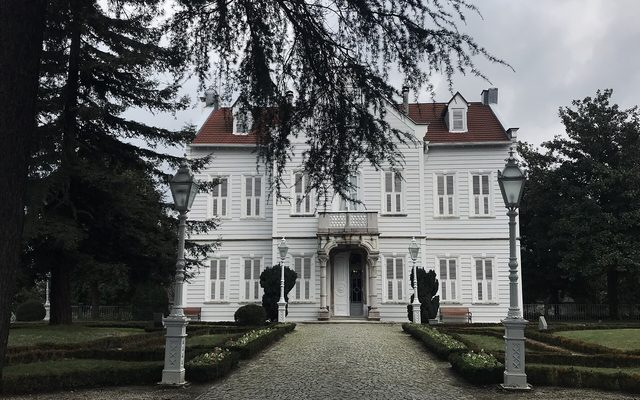
マスラク離宮群イスタンブール · オスマン (19世紀) メリチ橋エディルネ · オスマン (19世紀)
メリチ橋エディルネ · オスマン (19世紀) ミフリマー・スルタン・モスク（エディルネカプ）イスタンブール · オスマン (16世紀)
ミフリマー・スルタン・モスク（エディルネカプ）イスタンブール · オスマン (16世紀) ムラディエ複合施設ブルサ · オスマン
ムラディエ複合施設ブルサ · オスマン ムスタファパシャ（スィナソス）村ネヴシェヒル · オスマンナコレイアとセイイトガーズィー複合施設エスキシェヒル · セルジューク / オスマン
ムスタファパシャ（スィナソス）村ネヴシェヒル · オスマンナコレイアとセイイトガーズィー複合施設エスキシェヒル · セルジューク / オスマン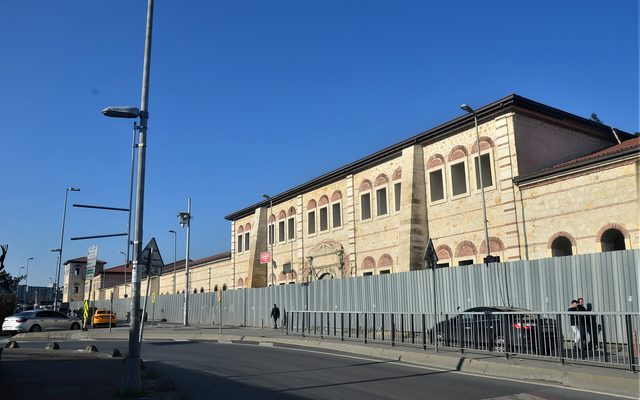
ラーミ兵舎（ラーミ図書館）イスタンブール · オスマン (18世紀) ルメリ・ヒサルイスタンブール · オスマン
ルメリ・ヒサルイスタンブール · オスマン リュステム・パシャ・モスクイスタンブール · オスマン (16世紀)セリミエ・モスクレフコシャ（ニコシア） · リュジニャン朝 / オスマンスィッレと聖ヘレナ教会コンヤ · ビザンツ / オスマン
リュステム・パシャ・モスクイスタンブール · オスマン (16世紀)セリミエ・モスクレフコシャ（ニコシア） · リュジニャン朝 / オスマンスィッレと聖ヘレナ教会コンヤ · ビザンツ / オスマン パドヴァの聖アントニオ教会イスタンブール · オスマン (20世紀)聖バルナバ修道院ガズィマウサ（ファマグスタ） · 初期キリスト教 / オスマンストラトニケイア遺跡ムーラ · ヘレニズム – オスマン
パドヴァの聖アントニオ教会イスタンブール · オスマン (20世紀)聖バルナバ修道院ガズィマウサ（ファマグスタ） · 初期キリスト教 / オスマンストラトニケイア遺跡ムーラ · ヘレニズム – オスマン スルタンアフメト・モスク（ブルーモスク）イスタンブール · オスマン (17世紀)
スルタンアフメト・モスク（ブルーモスク）イスタンブール · オスマン (17世紀) スルプ・ギラゴス・アルメニア教会ディヤルバクル · オスマン (19世紀)
スルプ・ギラゴス・アルメニア教会ディヤルバクル · オスマン (19世紀) スレイマニエ・モスクイスタンブール · オスマン (16世紀)スメラ修道院トラブゾン · ビザンツ – 20世紀
スレイマニエ・モスクイスタンブール · オスマン (16世紀)スメラ修道院トラブゾン · ビザンツ – 20世紀 歴史的刑務所（スィノプ）スィノプ · オスマン / 共和国時代
歴史的刑務所（スィノプ）スィノプ · オスマン / 共和国時代 トカト・タシュハントカト · オスマン
トカト・タシュハントカト · オスマン トプカプ宮殿イスタンブール · オスマン (15–19世紀)ヴァン城ヴァン · ウラルトゥ – オスマンイェディクレ要塞イスタンブール · ビザンツ / オスマン
トプカプ宮殿イスタンブール · オスマン (15–19世紀)ヴァン城ヴァン · ウラルトゥ – オスマンイェディクレ要塞イスタンブール · ビザンツ / オスマン ユリュク村カラビュク · オスマン
ユリュク村カラビュク · オスマン ユルドゥズ宮殿イスタンブール · オスマン (19世紀)
ユルドゥズ宮殿イスタンブール · オスマン (19世紀) イサク・パシャ宮殿アール · オスマンイスタンブール・ガラタ塔イスタンブール · ジェノヴァ / オスマン
イサク・パシャ宮殿アール · オスマンイスタンブール・ガラタ塔イスタンブール · ジェノヴァ / オスマン シェフザーデ・モスクイスタンブール · オスマン (16世紀)
シェフザーデ・モスクイスタンブール · オスマン (16世紀) シリンジェ村イズミル · オスマン
シリンジェ村イズミル · オスマン 諸島博物館イスタンブール · オスマン / 共和国時代
諸島博物館イスタンブール · オスマン / 共和国時代 アダム・ミツキェヴィチ博物館イスタンブール · オスマン
アダム・ミツキェヴィチ博物館イスタンブール · オスマン 木工芸博物館エスキシェヒル · オスマン / 共和国時代
木工芸博物館エスキシェヒル · オスマン / 共和国時代 アンタルヤ民俗学博物館アンタルヤ · オスマン / 近現代
アンタルヤ民俗学博物館アンタルヤ · オスマン / 近現代 軍事博物館イスタンブール · オスマン / 共和国時代
軍事博物館イスタンブール · オスマン / 共和国時代 アタテュルク・レディフ・民俗学博物館コジャエリ · オスマン / 共和国時代
アタテュルク・レディフ・民俗学博物館コジャエリ · オスマン / 共和国時代 狩猟館宮殿博物館コジャエリ · オスマンアヤソフィア歴史体験博物館イスタンブール · ビザンツ / オスマン
狩猟館宮殿博物館コジャエリ · オスマンアヤソフィア歴史体験博物館イスタンブール · ビザンツ / オスマン ベヤズット浴場文化博物館イスタンブール · オスマン
ベヤズット浴場文化博物館イスタンブール · オスマン ベイコズ・ガラスとクリスタル博物館イスタンブール · オスマン
ベイコズ・ガラスとクリスタル博物館イスタンブール · オスマン ベイパザル・リビングミュージアムアンカラ · オスマンベシュコナクラル民俗学博物館とマラティヤの伝統家屋マラティヤ · オスマン / 近現代
ベイパザル・リビングミュージアムアンカラ · オスマンベシュコナクラル民俗学博物館とマラティヤの伝統家屋マラティヤ · オスマン / 近現代 ビルギ・チャクルアー邸イズミル · オスマンビトリス民俗学博物館ビトリス · オスマン / 近現代ボドルム水中考古学博物館ムーラ · 青銅器時代 – オスマン
ビルギ・チャクルアー邸イズミル · オスマンビトリス民俗学博物館ビトリス · オスマン / 近現代ボドルム水中考古学博物館ムーラ · 青銅器時代 – オスマン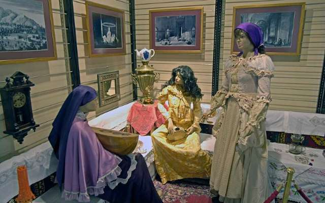
ブルサ・トルコ・イスラム美術博物館ブルサ · オスマン ジャーヒト・ストク・タランジュの家民俗学博物館ディヤルバクル · オスマン
ジャーヒト・ストク・タランジュの家民俗学博物館ディヤルバクル · オスマン デルヴィシュ・パシャ邸レフコシャ（ニコシア） · オスマン (19世紀)エディルネ・ヒドゥルルク砲台バルカン歴史博物館エディルネ · オスマンエミネ・ギョーユシュ料理博物館ガズィアンテプ · オスマン / 現代民俗学博物館アンカラ · セルジューク / オスマン / 共和国時代
デルヴィシュ・パシャ邸レフコシャ（ニコシア） · オスマン (19世紀)エディルネ・ヒドゥルルク砲台バルカン歴史博物館エディルネ · オスマンエミネ・ギョーユシュ料理博物館ガズィアンテプ · オスマン / 現代民俗学博物館アンカラ · セルジューク / オスマン / 共和国時代 ガラタ・メヴレヴィー修道場博物館イスタンブール · オスマン
ガラタ・メヴレヴィー修道場博物館イスタンブール · オスマン ゲリボル戦争博物館チャナッカレ · 第一次世界大戦
ゲリボル戦争博物館チャナッカレ · 第一次世界大戦 キレニア・イコン博物館ギルネ（キレニア） · オスマン (19世紀)
キレニア・イコン博物館ギルネ（キレニア） · オスマン (19世紀) ギュプギュポウル邸民俗学博物館カイセリ · オスマンハジュベクタシュ博物館ネヴシェヒル · セルジューク / オスマンハミディエ砲台とチャナッカレ戦争歴史博物館チャナッカレ · オスマン / 第一次世界大戦
ギュプギュポウル邸民俗学博物館カイセリ · オスマンハジュベクタシュ博物館ネヴシェヒル · セルジューク / オスマンハミディエ砲台とチャナッカレ戦争歴史博物館チャナッカレ · オスマン / 第一次世界大戦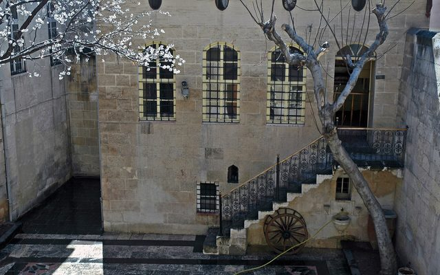
ハサン・スュゼル民俗学博物館ガズィアンテプ · オスマン ハゼランラル邸アマスヤ · オスマンジャンダルマ（憲兵）博物館アンカラ · オスマン / 共和国時代
ハゼランラル邸アマスヤ · オスマンジャンダルマ（憲兵）博物館アンカラ · オスマン / 共和国時代 カバテペ紹介センターチャナッカレ · 第一次世界大戦
カバテペ紹介センターチャナッカレ · 第一次世界大戦 カラビュク・サフランボル博物館カラビュク · オスマン
カラビュク・サフランボル博物館カラビュク · オスマン カルス・コーカサス戦線戦史博物館カルス · オスマン / 第一次世界大戦
カルス・コーカサス戦線戦史博物館カルス · オスマン / 第一次世界大戦 キリトバヒル城博物館チャナッカレ · オスマン
キリトバヒル城博物館チャナッカレ · オスマン コンヤ民俗学博物館コンヤ · オスマン / 近現代
コンヤ民俗学博物館コンヤ · オスマン / 近現代 コシュート・ハウス博物館キュタヒヤ · オスマン
コシュート・ハウス博物館キュタヒヤ · オスマン コシュートの家博物館キュタヒヤ · オスマン
コシュートの家博物館キュタヒヤ · オスマン クルキョプリュ記念博物館とアダナの伝統家屋アダナ · オスマン / 共和国時代
クルキョプリュ記念博物館とアダナの伝統家屋アダナ · オスマン / 共和国時代 ラティフオウル邸トカト · オスマン (19世紀)リヴァパシャ邸民俗学博物館カスタモヌ · オスマン
ラティフオウル邸トカト · オスマン (19世紀)リヴァパシャ邸民俗学博物館カスタモヌ · オスマン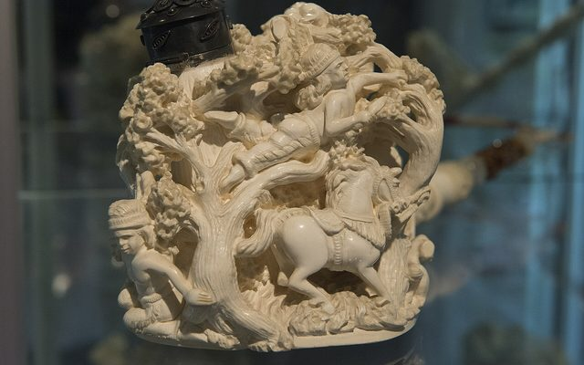
海泡石博物館エスキシェヒル · オスマン / 現代鉱山博物館ゾングルダク · 19–20世紀マルマリス博物館ムーラ · オスマンメヴラーナ博物館コンヤ · セルジューク / オスマン メヴレヴィー修道場博物館（レフコシャ）レフコシャ（ニコシア） · オスマン (17世紀)メヴレヴィー修道場博物館アンタルヤ · セルジューク / オスマン
メヴレヴィー修道場博物館（レフコシャ）レフコシャ（ニコシア） · オスマン (17世紀)メヴレヴィー修道場博物館アンタルヤ · セルジューク / オスマン ミマール・スィナン市博物館カイセリ · オスマン
ミマール・スィナン市博物館カイセリ · オスマン ミュゼ・ガズハーネイスタンブール · オスマン / 現代
ミュゼ・ガズハーネイスタンブール · オスマン / 現代 ナマズギャーフ砲台博物館チャナッカレ · オスマン / 第一次世界大戦ナームク・ケマルの家博物館テキルダー · オスマンナームク・ケマル牢獄と博物館ガズィマウサ（ファマグスタ） · ヴェネツィア / オスマン
ナマズギャーフ砲台博物館チャナッカレ · オスマン / 第一次世界大戦ナームク・ケマルの家博物館テキルダー · オスマンナームク・ケマル牢獄と博物館ガズィマウサ（ファマグスタ） · ヴェネツィア / オスマン ネジミ・イーエの家民俗学博物館エディルネ · オスマンニリュフェル・ハトゥン・イマーレト（トルコ・イスラム美術博物館）ブルサ · オスマン
ネジミ・イーエの家民俗学博物館エディルネ · オスマンニリュフェル・ハトゥン・イマーレト（トルコ・イスラム美術博物館）ブルサ · オスマン オスマン・ハムディ・ベイ博物館コジャエリ · オスマンオスマンの家博物館ブルサ · オスマン
オスマン・ハムディ・ベイ博物館コジャエリ · オスマンオスマンの家博物館ブルサ · オスマン パノラマ1453歴史博物館イスタンブール · オスマン
パノラマ1453歴史博物館イスタンブール · オスマン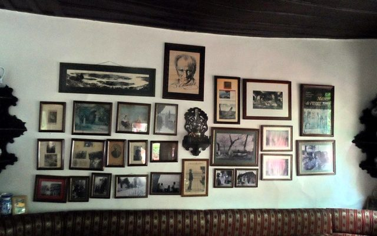
ピエール・ロティ博物館イスタンブール · オスマン サクプ・サバンジュ・マルディン市博物館マルディン · オスマン / 共和国時代
サクプ・サバンジュ・マルディン市博物館マルディン · オスマン / 共和国時代 サクプ・サバンジュ博物館イスタンブール · オスマン / 現代
サクプ・サバンジュ博物館イスタンブール · オスマン / 現代 サルト・ガラタイスタンブール · オスマン / 現代スィノプ・アルスラントルンラル民俗学博物館スィノプ · オスマン
サルト・ガラタイスタンブール · オスマン / 現代スィノプ・アルスラントルンラル民俗学博物館スィノプ · オスマン スルタン・バヤズィト2世複合施設健康博物館エディルネ · オスマン
スルタン・バヤズィト2世複合施設健康博物館エディルネ · オスマン ソユット・エルトゥールル・ガーズィー博物館ビレジク · オスマン
ソユット・エルトゥールル・ガーズィー博物館ビレジク · オスマン タクシアルヒス記念博物館バルケシル · オスマンタルスス・聖パウロ記念博物館メルスィン · オスマン / キリスト教
タクシアルヒス記念博物館バルケシル · オスマンタルスス・聖パウロ記念博物館メルスィン · オスマン / キリスト教 トファシュ・アナトリア馬車博物館ブルサ · オスマン / 共和国時代トカト・アタテュルクの家と民俗学博物館トカト · オスマン / 共和国時代
トファシュ・アナトリア馬車博物館ブルサ · オスマン / 共和国時代トカト・アタテュルクの家と民俗学博物館トカト · オスマン / 共和国時代 トルコ・ワクフ書道芸術博物館イスタンブール · オスマントルコ・イスラム美術博物館（イスタンブール）イスタンブール · セルジューク / オスマントルコ・イスラム美術博物館（エディルネ）エディルネ · オスマン
トルコ・ワクフ書道芸術博物館イスタンブール · オスマントルコ・イスラム美術博物館（イスタンブール）イスタンブール · セルジューク / オスマントルコ・イスラム美術博物館（エディルネ）エディルネ · オスマン トルコ・イスラム美術と民俗学博物館（エルズルム）エルズルム · イルハン朝 / オスマン
トルコ・イスラム美術と民俗学博物館（エルズルム）エルズルム · イルハン朝 / オスマン イェニシェヒル・シェマキの家博物館ブルサ · オスマン
イェニシェヒル・シェマキの家博物館ブルサ · オスマン ユルドゥズ陶磁器工場イスタンブール · オスマン
ユルドゥズ陶磁器工場イスタンブール · オスマン ズィヤ・ギョカルプ博物館ディヤルバクル · オスマン
ズィヤ・ギョカルプ博物館ディヤルバクル · オスマン チャムルク蒸気機関車博物館イズミル · オスマン / 共和国時代
チャムルク蒸気機関車博物館イズミル · オスマン / 共和国時代 チャナッカレ海事博物館チャナッカレ · 第一次世界大戦チャナッカレ叙事詩紹介センターチャナッカレ · 第一次世界大戦チャナッカレ・ヒラリ・アフメル再現エリアチャナッカレ · 第一次世界大戦
チャナッカレ海事博物館チャナッカレ · 第一次世界大戦チャナッカレ叙事詩紹介センターチャナッカレ · 第一次世界大戦チャナッカレ・ヒラリ・アフメル再現エリアチャナッカレ · 第一次世界大戦 チェンゲルハン・ラフミ・M・コチ博物館アンカラ · オスマン / 共和国時代
チェンゲルハン・ラフミ・M・コチ博物館アンカラ · オスマン / 共和国時代 チェシメ博物館イズミル · オスマン
チェシメ博物館イズミル · オスマン タイル博物館（キュタヒヤ）キュタヒヤ · ゲルミヤン侯国 / オスマン
タイル博物館（キュタヒヤ）キュタヒヤ · ゲルミヤン侯国 / オスマン イスタンブール海事博物館イスタンブール · オスマン / 共和国時代シャンルウルファ考古学博物館シャンルウルファ · 新石器時代 – オスマン
イスタンブール海事博物館イスタンブール · オスマン / 共和国時代シャンルウルファ考古学博物館シャンルウルファ · 新石器時代 – オスマン独立戦争と共和国
1919 – 現在 · 141 か所
 国家墓地アンカラ · 共和国時代エディルネ大シナゴーグエディルネ · オスマン (20世紀)フェティエ・カヤキョイ遺跡ムーラ · 19–20世紀
国家墓地アンカラ · 共和国時代エディルネ大シナゴーグエディルネ · オスマン (20世紀)フェティエ・カヤキョイ遺跡ムーラ · 19–20世紀 ガーズィー・キョシュキュディヤルバクル · Akkoyunlu / 共和国時代ローザンヌ記念碑とカラアーチ駅エディルネ · オスマン / 共和国時代パドヴァの聖アントニオ教会イスタンブール · オスマン (20世紀)スメラ修道院トラブゾン · ビザンツ – 20世紀歴史的刑務所（スィノプ）スィノプ · オスマン / 共和国時代
ガーズィー・キョシュキュディヤルバクル · Akkoyunlu / 共和国時代ローザンヌ記念碑とカラアーチ駅エディルネ · オスマン / 共和国時代パドヴァの聖アントニオ教会イスタンブール · オスマン (20世紀)スメラ修道院トラブゾン · ビザンツ – 20世紀歴史的刑務所（スィノプ）スィノプ · オスマン / 共和国時代 ヴァルダ橋アダナ · Cumhuriyet öncesi (1912)
ヴァルダ橋アダナ · Cumhuriyet öncesi (1912) 7月15日民主主義博物館アンカラ · 現代諸島博物館イスタンブール · オスマン / 共和国時代
7月15日民主主義博物館アンカラ · 現代諸島博物館イスタンブール · オスマン / 共和国時代 アダナ・アタテュルクの家博物館アダナ · 共和国時代アダテペ・オリーブオイル博物館チャナッカレ · 現代
アダナ・アタテュルクの家博物館アダナ · 共和国時代アダテペ・オリーブオイル博物館チャナッカレ · 現代 アフメト・ピリシュティナ市アーカイブと博物館イズミル · 共和国時代木工芸博物館エスキシェヒル · オスマン / 共和国時代アラエッディン・ヤヴァシチャの家博物館キリス · 共和国時代
アフメト・ピリシュティナ市アーカイブと博物館イズミル · 共和国時代木工芸博物館エスキシェヒル · オスマン / 共和国時代アラエッディン・ヤヴァシチャの家博物館キリス · 共和国時代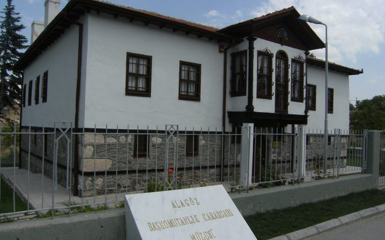
アラギョズ司令部博物館アンカラ · Kurtuluş Savaşıアランヤ・アタテュルクの家博物館アンタルヤ · 共和国時代アラチャム住民交換博物館サムスン · 共和国時代 アンカラおもちゃ博物館アンカラ · 共和国時代
アンカラおもちゃ博物館アンカラ · 共和国時代 アンタルヤ・アタテュルクの家博物館アンタルヤ · 共和国時代アンタルヤ民俗学博物館アンタルヤ · オスマン / 近現代
アンタルヤ・アタテュルクの家博物館アンタルヤ · 共和国時代アンタルヤ民俗学博物館アンタルヤ · オスマン / 近現代 アンタルヤおもちゃ博物館アンタルヤ · 現代
アンタルヤおもちゃ博物館アンタルヤ · 現代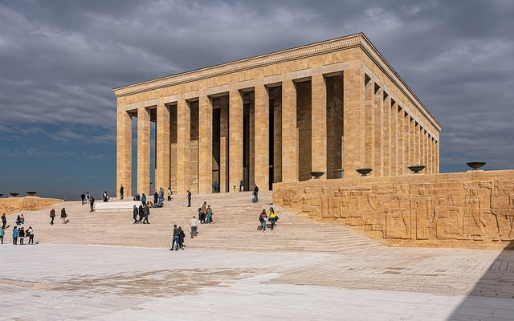
アヌトカビルアンカラ · 共和国時代 アラ・ギュレル博物館イスタンブール · 共和国時代
アラ・ギュレル博物館イスタンブール · 共和国時代 アルカス・アートセンターイズミル · 現代
アルカス・アートセンターイズミル · 現代 アルテルイスタンブール · 現代軍事博物館イスタンブール · オスマン / 共和国時代アタテュルクの家博物館（ディヤルバクル）ディヤルバクル · 共和国時代
アルテルイスタンブール · 現代軍事博物館イスタンブール · オスマン / 共和国時代アタテュルクの家博物館（ディヤルバクル）ディヤルバクル · 共和国時代 アタテュルク邸と鉄道博物館アンカラ · 共和国時代
アタテュルク邸と鉄道博物館アンカラ · 共和国時代 アタテュルク博物館（シシュリ）イスタンブール · 共和国時代アタテュルクと民俗学博物館（ウシャク）ウシャク · 共和国時代アタテュルク・レディフ・民俗学博物館コジャエリ · オスマン / 共和国時代
アタテュルク博物館（シシュリ）イスタンブール · 共和国時代アタテュルクと民俗学博物館（ウシャク）ウシャク · 共和国時代アタテュルク・レディフ・民俗学博物館コジャエリ · オスマン / 共和国時代 アトラス1948イスタンブール映画博物館イスタンブール · 共和国時代 / 現代
アトラス1948イスタンブール映画博物館イスタンブール · 共和国時代 / 現代 アーシュク・ヴェイセル博物館スィヴァス · 共和国時代
アーシュク・ヴェイセル博物館スィヴァス · 共和国時代 バルケシル・クヴァイ・ミッリイェ博物館バルケシル · 共和国時代
バルケシル・クヴァイ・ミッリイェ博物館バルケシル · 共和国時代 バンドゥルマ号船舶博物館サムスン · 共和国時代
バンドゥルマ号船舶博物館サムスン · 共和国時代 西部戦線司令部博物館コンヤ · 共和国時代
西部戦線司令部博物館コンヤ · 共和国時代 バイブルト・バクス博物館バイブルト · 現代ベシュコナクラル民俗学博物館とマラティヤの伝統家屋マラティヤ · オスマン / 近現代ビトリス民俗学博物館ビトリス · オスマン / 近現代ボアテペ・チーズ博物館カルス · 現代
バイブルト・バクス博物館バイブルト · 現代ベシュコナクラル民俗学博物館とマラティヤの伝統家屋マラティヤ · オスマン / 近現代ビトリス民俗学博物館ビトリス · オスマン / 近現代ボアテペ・チーズ博物館カルス · 現代 ブルサ・アタテュルクの家博物館ブルサ · 共和国時代
ブルサ・アタテュルクの家博物館ブルサ · 共和国時代 ジェンデレ美術館イスタンブール · Çağdaş Sanat
ジェンデレ美術館イスタンブール · Çağdaş Sanat ジェルモダンアンカラ · 現代
ジェルモダンアンカラ · 現代 共和国博物館アンカラ · 共和国時代
共和国博物館アンカラ · 共和国時代 デニズリ・アタテュルクと民俗学博物館デニズリ · 共和国時代
デニズリ・アタテュルクと民俗学博物館デニズリ · 共和国時代 デヴリム自動車博物館エスキシェヒル · 共和国時代
デヴリム自動車博物館エスキシェヒル · 共和国時代 エルギズ現代美術館イスタンブール · 現代エミネ・ギョーユシュ料理博物館ガズィアンテプ · オスマン / 現代
エルギズ現代美術館イスタンブール · 現代エミネ・ギョーユシュ料理博物館ガズィアンテプ · オスマン / 現代 エルズルム・アタテュルクの家博物館エルズルム · 共和国時代エルズルム国立絵画彫刻博物館エルズルム · 共和国時代 / 現代
エルズルム・アタテュルクの家博物館エルズルム · 共和国時代エルズルム国立絵画彫刻博物館エルズルム · 共和国時代 / 現代 エスキシェヒル解放博物館エスキシェヒル · 共和国時代民俗学博物館アンカラ · セルジューク / オスマン / 共和国時代
エスキシェヒル解放博物館エスキシェヒル · 共和国時代民俗学博物館アンカラ · セルジューク / オスマン / 共和国時代 教育風刺漫画博物館エスキシェヒル · 共和国時代
教育風刺漫画博物館エスキシェヒル · 共和国時代 フェネルバフチェ博物館イスタンブール · 共和国時代
フェネルバフチェ博物館イスタンブール · 共和国時代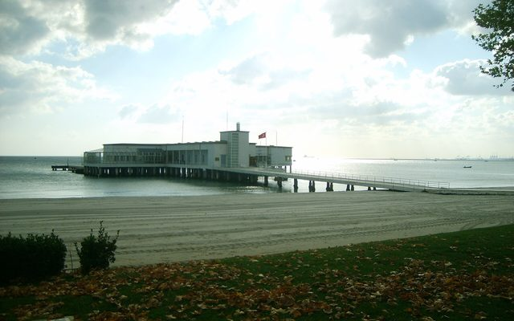
フロリヤ・アタテュルク海の館イスタンブール · 共和国時代 ガーズィー博物館サムスン · 共和国時代 (1919)
ガーズィー博物館サムスン · 共和国時代 (1919) ガズィアンテプ防衛と英雄パノラマ博物館ガズィアンテプ · 共和国時代
ガズィアンテプ防衛と英雄パノラマ博物館ガズィアンテプ · 共和国時代 ギョクヤイ財団チェス博物館アンカラ · 現代
ギョクヤイ財団チェス博物館アンカラ · 現代 ハフザ7月15日博物館イスタンブール · 現代
ハフザ7月15日博物館イスタンブール · 現代 空軍博物館アンカラ · 共和国時代ハヴザ・アタテュルクの家博物館サムスン · 共和国時代ヒルミ・ナキポウル・カメラ博物館イスタンブール · 現代
空軍博物館アンカラ · 共和国時代ハヴザ・アタテュルクの家博物館サムスン · 共和国時代ヒルミ・ナキポウル・カメラ博物館イスタンブール · 現代 ウードゥル虐殺記念碑と博物館ウードゥル · 共和国時代ジャンダルマ（憲兵）博物館アンカラ · オスマン / 共和国時代カフラマンカザン7月15日殉教者と民主主義博物館アンカラ · 現代カンディッリ地震博物館イスタンブール · 共和国時代
ウードゥル虐殺記念碑と博物館ウードゥル · 共和国時代ジャンダルマ（憲兵）博物館アンカラ · オスマン / 共和国時代カフラマンカザン7月15日殉教者と民主主義博物館アンカラ · 現代カンディッリ地震博物館イスタンブール · 共和国時代 カラジャス民俗学博物館アイドゥン · 近現代
カラジャス民俗学博物館アイドゥン · 近現代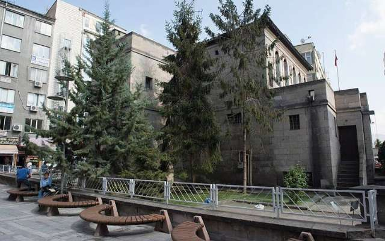
カイセリ・アタテュルクの家博物館カイセリ · 共和国時代 ケマル・スナル博物館イスタンブール · 共和国時代
ケマル・スナル博物館イスタンブール · 共和国時代 キー・ミュージアム（クラシックカー博物館）イズミル · 現代
キー・ミュージアム（クラシックカー博物館）イズミル · 現代 コンヤ・アタテュルクの家博物館コンヤ · 共和国時代コンヤ民俗学博物館コンヤ · オスマン / 近現代
コンヤ・アタテュルクの家博物館コンヤ · 共和国時代コンヤ民俗学博物館コンヤ · オスマン / 近現代 独立戦争博物館アンカラ · 共和国時代クルキョプリュ記念博物館とアダナの伝統家屋アダナ · オスマン / 共和国時代
独立戦争博物館アンカラ · 共和国時代クルキョプリュ記念博物館とアダナの伝統家屋アダナ · オスマン / 共和国時代 クヴァイ・ミッリイェ博物館バルケシル · 共和国時代
クヴァイ・ミッリイェ博物館バルケシル · 共和国時代 キャーズム・カラベキル・パシャ博物館イスタンブール · Kurtuluş Savaşı
キャーズム・カラベキル・パシャ博物館イスタンブール · Kurtuluş Savaşı ラティフェ・ハヌム邸記念館イズミル · 共和国時代海泡石博物館エスキシェヒル · オスマン / 現代鉱山博物館ゾングルダク · 19–20世紀マラティヤ・アタテュルク記念館と民俗学博物館マラティヤ · 共和国時代
ラティフェ・ハヌム邸記念館イズミル · 共和国時代海泡石博物館エスキシェヒル · オスマン / 現代鉱山博物館ゾングルダク · 19–20世紀マラティヤ・アタテュルク記念館と民俗学博物館マラティヤ · 共和国時代 無垢の博物館イスタンブール · 現代メフメト・アーキフ・エルソイ文学博物館図書館アンカラ · 共和国時代
無垢の博物館イスタンブール · 現代メフメト・アーキフ・エルソイ文学博物館図書館アンカラ · 共和国時代 メフメト・アーキフ・エルソイ記念館イスタンブール · 共和国時代
メフメト・アーキフ・エルソイ記念館イスタンブール · 共和国時代 メルスィン・アタテュルクの家博物館メルスィン · 共和国時代
メルスィン・アタテュルクの家博物館メルスィン · 共和国時代 ミニアトゥルクイスタンブール · 現代
ミニアトゥルクイスタンブール · 現代 MKE産業技術博物館アンカラ · 共和国時代
MKE産業技術博物館アンカラ · 共和国時代 ムダニヤ休戦協定の家博物館ブルサ · 共和国時代ミュゼ・ガズハーネイスタンブール · オスマン / 現代ネヴシェヒル・ハジュベクタシュ・アタテュルクの家博物館ネヴシェヒル · 共和国時代
ムダニヤ休戦協定の家博物館ブルサ · 共和国時代ミュゼ・ガズハーネイスタンブール · オスマン / 現代ネヴシェヒル・ハジュベクタシュ・アタテュルクの家博物館ネヴシェヒル · 共和国時代 中東工科大学科学技術博物館アンカラ · 現代
中東工科大学科学技術博物館アンカラ · 現代 オドゥンパザル近代美術館エスキシェヒル · 現代
オドゥンパザル近代美術館エスキシェヒル · 現代 オルハン・ケマル博物館イスタンブール · 共和国時代
オルハン・ケマル博物館イスタンブール · 共和国時代 ラフミ・M・コチ博物館イスタンブール · 近現代
ラフミ・M・コチ博物館イスタンブール · 近現代 国立絵画彫刻博物館アンカラ · 共和国時代
国立絵画彫刻博物館アンカラ · 共和国時代 リゼ・アタテュルクの家博物館リゼ · 共和国時代
リゼ・アタテュルクの家博物館リゼ · 共和国時代 サイト・ファイク・アバスヤヌク博物館イスタンブール · 共和国時代サクプ・サバンジュ・マルディン市博物館マルディン · オスマン / 共和国時代サクプ・サバンジュ博物館イスタンブール · オスマン / 現代サルト・ガラタイスタンブール · オスマン / 現代
サイト・ファイク・アバスヤヌク博物館イスタンブール · 共和国時代サクプ・サバンジュ・マルディン市博物館マルディン · オスマン / 共和国時代サクプ・サバンジュ博物館イスタンブール · オスマン / 現代サルト・ガラタイスタンブール · オスマン / 現代 セカ紙博物館コジャエリ · 共和国時代
セカ紙博物館コジャエリ · 共和国時代 スィリフケ・アタテュルクの家と民俗学博物館メルスィン · 共和国時代シルヴァン・アタテュルクの家博物館ディヤルバクル · 共和国時代
スィリフケ・アタテュルクの家と民俗学博物館メルスィン · 共和国時代シルヴァン・アタテュルクの家博物館ディヤルバクル · 共和国時代 スィヴァス・アタテュルクと会議博物館スィヴァス · 共和国時代 (1919)タイフン・タリポウル・タイプライター博物館エスキシェヒル · 現代
スィヴァス・アタテュルクと会議博物館スィヴァス · 共和国時代 (1919)タイフン・タリポウル・タイプライター博物館エスキシェヒル · 現代 タシュジュ・アタテュルクの家メルスィン · 共和国時代
タシュジュ・アタテュルクの家メルスィン · 共和国時代 トルコ国鉄野外蒸気機関車博物館アンカラ · 共和国時代
トルコ国鉄野外蒸気機関車博物館アンカラ · 共和国時代 トルコ国鉄マルキョイ駅博物館アンカラ · Kurtuluş Savaşıテキルダー・ムラトル・アタテュルクの家博物館テキルダー · 共和国時代トファシュ・アナトリア馬車博物館ブルサ · オスマン / 共和国時代トカト・アタテュルクの家と民俗学博物館トカト · オスマン / 共和国時代
トルコ国鉄マルキョイ駅博物館アンカラ · Kurtuluş Savaşıテキルダー・ムラトル・アタテュルクの家博物館テキルダー · 共和国時代トファシュ・アナトリア馬車博物館ブルサ · オスマン / 共和国時代トカト・アタテュルクの家と民俗学博物館トカト · オスマン / 共和国時代 トラブゾン・アタテュルク・キョシュキュトラブゾン · 共和国時代
トラブゾン・アタテュルク・キョシュキュトラブゾン · 共和国時代 トラブゾン博物館（コスタキ邸）トラブゾン · 20世紀初め / 複数の時代
トラブゾン博物館（コスタキ邸）トラブゾン · 20世紀初め / 複数の時代 トルコ航空協会博物館アンカラ · 共和国時代
トルコ航空協会博物館アンカラ · 共和国時代 トルコ・イシュ銀行博物館イスタンブール · 共和国時代
トルコ・イシュ銀行博物館イスタンブール · 共和国時代 ウルジャンラル刑務所博物館アンカラ · 共和国時代
ウルジャンラル刑務所博物館アンカラ · 共和国時代 ヤヒヤ・ケマル博物館イスタンブール · 共和国時代
ヤヒヤ・ケマル博物館イスタンブール · 共和国時代 ユリュク・アリ・エフェの家博物館アイドゥン · 共和国時代
ユリュク・アリ・エフェの家博物館アイドゥン · 共和国時代 ヤロヴァの「歩く館」ヤロヴァ · 共和国時代
ヤロヴァの「歩く館」ヤロヴァ · 共和国時代 ユルマズ・ビュユケルシェン蝋人形館エスキシェヒル · 現代
ユルマズ・ビュユケルシェン蝋人形館エスキシェヒル · 現代 勝利博物館アフヨンカラヒサール · 共和国時代
勝利博物館アフヨンカラヒサール · 共和国時代 ゼキ・ミュレン芸術博物館ムーラ · 共和国時代
ゼキ・ミュレン芸術博物館ムーラ · 共和国時代 サントラルイスタンブール・エネルギー博物館イスタンブール · 共和国時代チャムルク蒸気機関車博物館イズミル · オスマン / 共和国時代
サントラルイスタンブール・エネルギー博物館イスタンブール · 共和国時代チャムルク蒸気機関車博物館イズミル · オスマン / 共和国時代 チャタルジャ住民交換博物館イスタンブール · 共和国時代
チャタルジャ住民交換博物館イスタンブール · 共和国時代 現代ガラス芸術博物館エスキシェヒル · 現代チェンゲルハン・ラフミ・M・コチ博物館アンカラ · オスマン / 共和国時代
現代ガラス芸術博物館エスキシェヒル · 現代チェンゲルハン・ラフミ・M・コチ博物館アンカラ · オスマン / 共和国時代 イルハン・コマン彫刻絵画博物館エディルネ · 共和国時代
イルハン・コマン彫刻絵画博物館エディルネ · 共和国時代 イルテル・ウゼル医学歯学博物館アダナ · 共和国時代イノニュの戦い司令部博物館エスキシェヒル · 共和国時代
イルテル・ウゼル医学歯学博物館アダナ · 共和国時代イノニュの戦い司令部博物館エスキシェヒル · 共和国時代 イスメト・イノニュの家博物館イスタンブール · 共和国時代イスタンブール海事博物館イスタンブール · オスマン / 共和国時代
イスメト・イノニュの家博物館イスタンブール · 共和国時代イスタンブール海事博物館イスタンブール · オスマン / 共和国時代 イスタンブール航空博物館イスタンブール · 共和国時代
イスタンブール航空博物館イスタンブール · 共和国時代 イスタンブール・モダンイスタンブール · 共和国時代 / 現代
イスタンブール・モダンイスタンブール · 共和国時代 / 現代 イスタンブールおもちゃ博物館イスタンブール · 現代
イスタンブールおもちゃ博物館イスタンブール · 現代 イズミル・アタテュルク博物館イズミル · 共和国時代
イズミル・アタテュルク博物館イズミル · 共和国時代 イズミル文化芸術工場イズミル · 共和国時代 / 現代
イズミル文化芸術工場イズミル · 共和国時代 / 現代 イズミル国立絵画彫刻博物館イズミル · 共和国時代 / 現代
イズミル国立絵画彫刻博物館イズミル · 共和国時代 / 現代 イズミト地震追悼・啓発博物館コジャエリ · 現代
イズミト地震追悼・啓発博物館コジャエリ · 現代 シェビンカラヒサル・アタテュルクの家博物館ギレスン · 共和国時代
シェビンカラヒサル・アタテュルクの家博物館ギレスン · 共和国時代